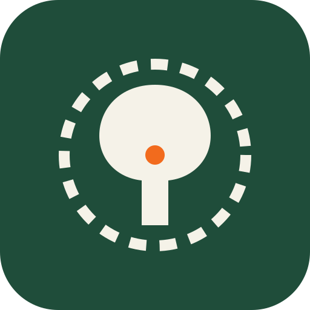

<!doctype html>
<html lang="es">
<head>
<meta charset="utf-8">
<meta name="viewport" content="width=device-width,initial-scale=1,viewport-fit=cover">
<title>Estadillos de Inventario</title>
<meta name="theme-color" content="#1F4D3A">
<link rel="manifest" href="manifest.webmanifest">
<link rel="icon" href="icon.svg">
<link rel="stylesheet" href="https://cdnjs.cloudflare.com/ajax/libs/leaflet/1.9.4/leaflet.min.css">
<style>
/* Herramienta de campo: alto contraste para pleno sol, botones grandes para el pulgar.
   Verde encina para la estructura, naranja de pintura de marcar para lo activo. */
:root {
  --bg: #F3F5F1;
  --surface: #FFFFFF;
  --ink: #17211C;
  --muted: #5A665F;
  --line: #D3DAD4;
  --brand: #1F4D3A;
  --brand-ink: #F5F2E8;
  --mark: #E8590C;
  --mark-soft: #FFE8D9;
  --ok: #2E7D32;
  --ok-soft: #E3F1E4;
  --warn: #A86500;
  --warn-soft: #FFF1D6;
  --idle: #8A958E;
  --idle-soft: #ECEFEC;
  --danger: #B42318;
  --me: #1565C0;
  --font: system-ui, -apple-system, "Segoe UI", Roboto, "Helvetica Neue", Arial, sans-serif;
  --radius: 10px;
}
@media (prefers-color-scheme: dark) {
  :root:not([data-theme="light"]) {
    --bg: #0F1512; --surface: #18201B; --ink: #E9EEEA; --muted: #9AA79F; --line: #2D3832;
    --brand: #2F6B51; --brand-ink: #F5F2E8; --mark: #FF7A2E; --mark-soft: #3A2414;
    --ok: #66BB6A; --ok-soft: #1C2E1E; --warn: #F2B544; --warn-soft: #33290F;
    --idle: #7D8A82; --idle-soft: #222B26; --danger: #F97066; --me: #64B5F6;
    color-scheme: dark;
  }
}
:root[data-theme="dark"] {
  --bg: #0F1512; --surface: #18201B; --ink: #E9EEEA; --muted: #9AA79F; --line: #2D3832;
  --brand: #2F6B51; --brand-ink: #F5F2E8; --mark: #FF7A2E; --mark-soft: #3A2414;
  --ok: #66BB6A; --ok-soft: #1C2E1E; --warn: #F2B544; --warn-soft: #33290F;
  --idle: #7D8A82; --idle-soft: #222B26; --danger: #F97066; --me: #64B5F6;
  color-scheme: dark;
}
* { box-sizing: border-box; }
html { -webkit-text-size-adjust: 100%; }
body {
  margin: 0; background: var(--bg); color: var(--ink); font: 16px/1.4 var(--font);
  padding-bottom: env(safe-area-inset-bottom, 0px);
}
body::before { content: ""; position: fixed; inset: 0 0 auto; height: env(safe-area-inset-top, 0px); z-index: 30; background: var(--brand); }
button, input, select, textarea { font: inherit; color: inherit; }
input, select, textarea {
  width: 100%; min-height: 46px; padding: 10px 12px; font-size: 17px;
  background: var(--surface); border: 1.5px solid var(--line); border-radius: 8px;
}
textarea { min-height: 96px; resize: vertical; }
input:focus, select:focus, textarea:focus { outline: none; border-color: var(--mark); box-shadow: 0 0 0 3px var(--mark-soft); }
:focus-visible { outline: 3px solid var(--mark); outline-offset: 2px; }
.num { font-variant-numeric: tabular-nums; }
h1, h2, h3 { margin: 0; text-wrap: balance; }

/* Barra superior */
.bar {
  position: sticky; top: env(safe-area-inset-top, 0px); z-index: 20;
  background: var(--brand); color: var(--brand-ink);
  padding-left: max(8px, env(safe-area-inset-left, 0px)); padding-right: max(8px, env(safe-area-inset-right, 0px));
}
.bar-in { display: flex; align-items: center; gap: 6px; min-height: 56px; }
.bar h1 { font-size: 19px; font-weight: 700; line-height: 1.15; }
.bar .sub { font-size: 13px; opacity: .8; }
.bar .grow { flex: 1; min-width: 0; }
.bar .grow > * { overflow: hidden; text-overflow: ellipsis; white-space: nowrap; }
.ib {
  min-width: 46px; min-height: 46px; border: 0; background: transparent; color: inherit;
  border-radius: 8px; display: grid; place-items: center; cursor: pointer;
}
.ib:active { background: rgb(255 255 255 / .15); }
.ib svg { width: 24px; height: 24px; }
.pill-btn {
  border: 1.5px solid rgb(255 255 255 / .55); background: transparent; color: inherit;
  border-radius: 999px; padding: 8px 14px; font-weight: 600; font-size: 14px; cursor: pointer; white-space: nowrap;
}
.pill-btn.done { background: var(--brand-ink); color: var(--brand); border-color: var(--brand-ink); }

/* Pestañas de la ficha */
.tabs {
  position: sticky; top: calc(env(safe-area-inset-top, 0px) + 56px); z-index: 19;
  display: flex; gap: 4px; overflow-x: auto; scrollbar-width: none;
  background: var(--surface); border-bottom: 1px solid var(--line);
  padding: 6px max(8px, env(safe-area-inset-right, 0px)) 6px max(8px, env(safe-area-inset-left, 0px));
}
.tabs::-webkit-scrollbar { display: none; }
.tab {
  flex: none; border: 0; background: transparent; padding: 9px 12px; border-radius: 8px;
  font-size: 15px; font-weight: 600; color: var(--muted); cursor: pointer; white-space: nowrap;
}
.tab[aria-selected="true"] { background: var(--brand); color: var(--brand-ink); }
.tab .b { display: inline-block; min-width: 20px; margin-left: 4px; padding: 0 6px; border-radius: 999px; font-size: 12px; background: var(--idle-soft); color: var(--ink); }
.tab[aria-selected="true"] .b { background: rgb(255 255 255 / .2); color: inherit; }

/* Contenido */
.wrap {
  max-width: 720px; margin: 0 auto;
  padding-block: 14px 120px;
  padding-left: max(16px, env(safe-area-inset-left, 0px)); padding-right: max(16px, env(safe-area-inset-right, 0px));
  display: flex; flex-direction: column; gap: 14px;
}
.sec { display: flex; flex-direction: column; gap: 10px; }
.sec-h { display: flex; align-items: baseline; justify-content: space-between; gap: 8px; }
.sec-h h2 { font-size: 13px; font-weight: 700; letter-spacing: .06em; text-transform: uppercase; color: var(--muted); }
.sec-h .note { font-size: 13px; color: var(--muted); }
.card { background: var(--surface); border: 1px solid var(--line); border-radius: var(--radius); padding: 14px; }
.hint { font-size: 14px; color: var(--muted); margin: 0; }
.empty { color: var(--muted); text-align: center; padding: 18px 8px; margin: 0; }
.fld { display: flex; flex-direction: column; gap: 4px; font-size: 14px; font-weight: 600; color: var(--muted); min-width: 0; }
.fld > span small { font-weight: 400; }
.grid2 { display: grid; grid-template-columns: 1fr 1fr; gap: 10px; }
.grid3 { display: grid; grid-template-columns: repeat(3, 1fr); gap: 10px; }
.row { display: flex; gap: 10px; flex-wrap: wrap; align-items: center; }
.row > .grow { flex: 1; min-width: 0; }

.btn {
  min-height: 48px; padding: 10px 16px; border-radius: 10px; border: 0; cursor: pointer;
  background: var(--brand); color: var(--brand-ink); font-weight: 700; font-size: 16px;
  display: inline-flex; align-items: center; justify-content: center; gap: 8px; text-decoration: none;
}
.btn.ghost { background: transparent; color: var(--brand); border: 1.5px solid var(--brand); }
:root:not([data-theme="light"]) .btn.ghost { color: var(--ink); }
.btn.mark { background: var(--mark); color: #fff; }
.btn.danger { background: transparent; color: var(--danger); border: 1.5px solid var(--danger); }
.btn.wide { width: 100%; }
.btn.big { min-height: 58px; font-size: 18px; }
.btn:active { transform: translateY(1px); }
.btn[disabled] { opacity: .5; }

/* Botoneras de opción */
.seg { display: flex; flex-wrap: wrap; gap: 6px; }
.seg button, .chip {
  min-height: 44px; min-width: 44px; padding: 8px 12px; border-radius: 8px; cursor: pointer;
  border: 1.5px solid var(--line); background: var(--surface); font-weight: 600; font-size: 15px;
}
.seg button[aria-pressed="true"], .chip[aria-pressed="true"] { background: var(--mark); border-color: var(--mark); color: #fff; }
.seg.fill { display: grid; grid-template-columns: repeat(auto-fit, minmax(48px, 1fr)); }
.seg button small { display: block; font-weight: 500; font-size: 11px; opacity: .85; }
.chips { display: flex; gap: 6px; overflow-x: auto; padding-bottom: 2px; scrollbar-width: thin; }
.chips .chip { flex: none; }
.chip.add { border-style: dashed; color: var(--muted); }
.lbl { font-size: 14px; font-weight: 600; color: var(--muted); }

/* Contadores */
.cnt { display: flex; align-items: center; gap: 4px; }
.cnt button {
  width: 46px; height: 46px; border-radius: 8px; border: 1.5px solid var(--line); background: var(--surface);
  font-size: 24px; font-weight: 600; line-height: 1; cursor: pointer;
}
.cnt button.plus { background: var(--brand); border-color: var(--brand); color: var(--brand-ink); }
.cnt output { min-width: 42px; text-align: center; font-size: 22px; font-weight: 700; font-variant-numeric: tabular-nums; }

/* Lista de fincas y parcelas */
.list { display: flex; flex-direction: column; gap: 8px; }
.item {
  display: flex; align-items: center; gap: 12px; width: 100%; text-align: left; cursor: pointer;
  background: var(--surface); border: 1px solid var(--line); border-radius: var(--radius); padding: 12px 14px; min-height: 64px;
}
.item .grow { flex: 1; min-width: 0; }
.item b { font-size: 17px; display: block; }
.item .meta { font-size: 14px; color: var(--muted); }
.pnum {
  width: 46px; height: 46px; border-radius: 50%; display: grid; place-items: center; flex: none;
  font-weight: 800; font-size: 18px; font-variant-numeric: tabular-nums; border: 2.5px solid currentColor;
}
.st-pendiente { color: var(--idle); }
.st-curso { color: var(--warn); }
.st-hecha { color: var(--ok); }
.tag { display: inline-block; font-size: 12px; font-weight: 700; padding: 2px 8px; border-radius: 999px; letter-spacing: .02em; }
.tag.st-pendiente { background: var(--idle-soft); }
.tag.st-curso { background: var(--warn-soft); }
.tag.st-hecha { background: var(--ok-soft); }
.dist { text-align: right; font-variant-numeric: tabular-nums; font-weight: 700; white-space: nowrap; }
.dist small { display: block; font-weight: 500; color: var(--muted); }
.prog { height: 6px; border-radius: 3px; background: var(--idle-soft); overflow: hidden; margin-top: 8px; }
.prog i { display: block; height: 100%; background: var(--ok); }

.gps { display: flex; align-items: center; gap: 8px; font-size: 14px; color: var(--muted); }
.gps i { width: 10px; height: 10px; border-radius: 50%; background: var(--idle); flex: none; }
.gps.on i { background: var(--ok); box-shadow: 0 0 0 4px var(--ok-soft); }
.gps.weak i { background: var(--warn); }

/* Plano de puntos */
.radar { width: 100%; height: auto; max-height: 340px; display: block; background: var(--surface); border: 1px solid var(--line); border-radius: var(--radius); touch-action: manipulation; }
.radar text { font: 700 13px var(--font); fill: var(--ink); }
.radar .lbl2 { font-weight: 500; font-size: 11px; fill: var(--muted); }

/* Mapa de satélite */
.map { width: 100%; height: 360px; border: 1px solid var(--line); border-radius: var(--radius); overflow: hidden; background: var(--idle-soft); z-index: 0; }
.map-bar { gap: 8px; }
.map-bar .btn { min-height: 44px; padding: 8px 12px; font-size: 14px; }
.pm-ico { display: grid; place-items: center; width: 34px; height: 34px; border-radius: 50%; border: 2.5px solid #fff; color: #fff; font: 800 15px var(--font); box-shadow: 0 1px 4px rgb(0 0 0 / .5); cursor: pointer; }
.pm-ico.st-pendiente { background: #6B7570; } .pm-ico.st-curso { background: #C77700; } .pm-ico.st-hecha { background: #2E7D32; }
.leaflet-tooltip.rodal-lbl { background: rgb(0 0 0 / .45); border: 0; box-shadow: none; color: #fff; font: 700 12px var(--font); padding: 1px 6px; }
.leaflet-tooltip.rodal-lbl::before { display: none; }
.leaflet-container { font: 13px var(--font); }

/* Navegación al punto */
.nav { display: flex; align-items: center; gap: 14px; }
.arrow { width: 84px; height: 84px; flex: none; border-radius: 50%; background: var(--idle-soft); display: grid; place-items: center; }
.arrow svg { width: 60px; height: 60px; transition: transform .25s ease; }
.nav .d { font-size: 30px; font-weight: 800; font-variant-numeric: tabular-nums; line-height: 1.1; }
.nav .t { font-size: 14px; color: var(--muted); }
.nav.here .arrow { background: var(--ok-soft); }
.nav.here .d { color: var(--ok); }

/* Entrada rápida de pies mayores */
.entry { border: 2px solid var(--mark); background: var(--surface); border-radius: var(--radius); padding: 12px; display: flex; flex-direction: column; gap: 10px; }
.entry .dn { display: grid; grid-template-columns: 1fr 1fr; gap: 10px; }
.entry .dn input { font-size: 26px; font-weight: 700; text-align: center; min-height: 58px; font-variant-numeric: tabular-nums; }
.entry .mini { display: flex; flex-direction: column; gap: 4px; }
.seg.even { display: grid; grid-auto-flow: column; grid-auto-columns: 1fr; }
.seg.even button { padding: 6px 2px; min-width: 0; font-size: 13px; letter-spacing: -.01em; }
.r-h .seg { flex: none; flex-wrap: nowrap; }
.entry .mini .seg button { min-height: 42px; }
.entry.editing { border-color: var(--me); }
.trees { display: flex; flex-direction: column; border: 1px solid var(--line); border-radius: var(--radius); background: var(--surface); overflow: hidden; }
.tree { display: grid; grid-template-columns: 38px 46px 1fr auto 44px; align-items: center; gap: 6px; padding: 6px 6px 6px 12px; border-top: 1px solid var(--line); min-height: 52px; cursor: pointer; font-variant-numeric: tabular-nums; }
.tree:first-child { border-top: 0; }
.tree .n { font-weight: 800; color: var(--muted); }
.tree .s { font-weight: 700; }
.tree .vc { font-size: 13px; color: var(--muted); white-space: nowrap; }
.tree .x { width: 40px; height: 40px; border: 0; background: transparent; color: var(--danger); font-size: 22px; cursor: pointer; border-radius: 8px; }
.tree.sel { background: var(--mark-soft); }
.tree .warn { color: var(--warn); font-size: 12px; font-weight: 700; }
.stats { display: grid; grid-template-columns: repeat(3, 1fr); gap: 8px; }
.stat { background: var(--surface); border: 1px solid var(--line); border-radius: var(--radius); padding: 8px 10px; }
.stat b { display: block; font-size: 22px; font-variant-numeric: tabular-nums; }
.stat span { font-size: 12px; color: var(--muted); }

/* Filas de tablas pequeñas */
.rows { display: flex; flex-direction: column; gap: 8px; }
.r { background: var(--surface); border: 1px solid var(--line); border-radius: var(--radius); padding: 10px 12px; display: flex; flex-direction: column; gap: 8px; }
.r-h { display: flex; align-items: center; justify-content: space-between; gap: 8px; }
.r-h b { font-size: 17px; }
.del { border: 0; background: transparent; color: var(--danger); font-weight: 600; cursor: pointer; min-height: 40px; padding: 0 8px; }
.r .cols { display: flex; gap: 16px; flex-wrap: wrap; align-items: flex-end; }
.r .cols > div { display: flex; flex-direction: column; gap: 4px; }

details.tipo { background: var(--surface); border: 1px solid var(--line); border-radius: var(--radius); }
details.tipo > summary { list-style: none; padding: 12px 14px; cursor: pointer; display: flex; align-items: center; gap: 12px; min-height: 56px; }
details.tipo > summary::-webkit-details-marker { display: none; }
details.tipo .q { width: 40px; height: 40px; border-radius: 8px; background: var(--brand); color: var(--brand-ink); display: grid; place-items: center; font-weight: 800; font-size: 18px; flex: none; }
details.tipo .body { padding: 0 14px 14px; display: flex; flex-direction: column; gap: 10px; }
.pair { display: grid; grid-template-columns: 92px 1fr 1fr; gap: 8px; align-items: center; }
.pair .lbl { font-size: 13px; }
.pair input { text-align: center; }

.photos { display: grid; grid-template-columns: repeat(auto-fill, minmax(140px, 1fr)); gap: 10px; }
.ph { background: var(--surface); border: 1px solid var(--line); border-radius: var(--radius); overflow: hidden; display: flex; flex-direction: column; }
.ph img { width: 100%; aspect-ratio: 4/3; object-fit: cover; display: block; background: var(--idle-soft); max-width: 100%; }
.ph .ph-b { padding: 6px; display: flex; gap: 6px; align-items: center; }
.ph select { min-height: 38px; padding: 4px 6px; font-size: 14px; }

.next { margin-top: 6px; }
#toast {
  position: fixed; left: 50%; transform: translateX(-50%); bottom: calc(18px + env(safe-area-inset-bottom, 0px)); z-index: 50;
  background: var(--ink); color: var(--bg); padding: 12px 18px; border-radius: 10px; font-weight: 600; max-width: calc(100% - 32px);
  box-shadow: 0 6px 20px rgb(0 0 0 / .25);
}
.shake { animation: shake .3s; }
@keyframes shake { 25% { transform: translateX(-6px); } 75% { transform: translateX(6px); } }
@media (prefers-reduced-motion: reduce) { .shake { animation: none; } .arrow svg { transition: none; } }
.status { display: flex; flex-wrap: wrap; gap: 8px 16px; align-items: center; }
.sync { display: flex; align-items: center; gap: 8px; font-size: 14px; color: var(--muted); border: 0; background: transparent; padding: 0; cursor: pointer; text-align: left; }
.sync i { width: 10px; height: 10px; border-radius: 50%; background: var(--idle); flex: none; }
.sync.ok i { background: var(--ok); }
.sync.pend i { background: var(--warn); }
.sync.err { color: var(--danger); }
.sync.err i { background: var(--danger); }
.sync.busy i { background: var(--me); animation: pulse 1s infinite alternate; }
@keyframes pulse { to { opacity: .3; } }
.login { max-width: 420px; margin: 0 auto; padding-block: 40px 40px; padding-left: max(16px, env(safe-area-inset-left, 0px)); padding-right: max(16px, env(safe-area-inset-right, 0px)); display: flex; flex-direction: column; gap: 14px; }
.login .logo { display: flex; align-items: center; gap: 12px; }
.login h1 { font-size: 26px; }
.err-box { background: var(--mark-soft); color: var(--danger); border-radius: 8px; padding: 10px 12px; font-weight: 600; font-size: 14px; }
.tbl-wrap { overflow-x: auto; border: 1px solid var(--line); border-radius: var(--radius); background: var(--surface); }
.tbl { border-collapse: collapse; width: 100%; font-size: 14px; font-variant-numeric: tabular-nums; }
.tbl th, .tbl td { padding: 8px 10px; border-bottom: 1px solid var(--line); text-align: left; white-space: nowrap; }
.tbl th { font-size: 12px; text-transform: uppercase; letter-spacing: .05em; color: var(--muted); }
.tbl td.n, .tbl th.n { text-align: right; }
.tbl tbody tr { cursor: pointer; }
.tbl tbody tr:hover { background: var(--idle-soft); }
.tbl tr:last-child td { border-bottom: 0; }
/* Tablet: dos columnas para aprovechar la pantalla, en vertical y en horizontal */
.split { display: flex; flex-direction: column; gap: 14px; }
.split > * { display: flex; flex-direction: column; gap: 14px; min-width: 0; }
.tipo-grid { display: flex; flex-direction: column; gap: 10px; }
@media (min-width: 760px) {
  .wrap { max-width: 1180px; }
  .split { display: grid; grid-template-columns: 1fr 1fr; align-items: start; gap: 18px; }
  .pm-split { grid-template-columns: minmax(340px, 5fr) 6fr; }
  .pm-l { position: sticky; top: calc(env(safe-area-inset-top, 0px) + 118px); }
  .finca-split .radar { max-height: none; }
  .finca-split .map { height: 460px; }
  .finca-split > .col:first-child { position: sticky; top: calc(env(safe-area-inset-top, 0px) + 66px); }
  .tipo-grid { display: grid; grid-template-columns: 1fr 1fr; align-items: start; }
  .photos { grid-template-columns: repeat(auto-fill, minmax(200px, 1fr)); }
  .tabs { justify-content: center; }
  .entry .dn input { min-height: 64px; font-size: 30px; }
  .entry .chips { flex-wrap: wrap; overflow: visible; }
}
@media (max-width: 380px) { .grid3 { grid-template-columns: 1fr 1fr; } .pair { grid-template-columns: 80px 1fr 1fr; } }
</style>
</head>
<body>
<div id="app"></div>
<div id="toast" hidden></div>
<script src="https://cdnjs.cloudflare.com/ajax/libs/xlsx/0.18.5/xlsx.full.min.js" defer></script>
<script src="https://cdnjs.cloudflare.com/ajax/libs/jszip/3.10.1/jszip.min.js" defer></script>
<script src="https://cdnjs.cloudflare.com/ajax/libs/leaflet/1.9.4/leaflet.min.js"></script>
<script src="config.js"></script>
<script src="https://cdn.jsdelivr.net/npm/@supabase/supabase-js@2.45.4/dist/umd/supabase.min.js"></script>
<script>
'use strict';
/* ============ Utilidades ============ */
const $ = (s, r = document) => r.querySelector(s);
const $$ = (s, r = document) => [...r.querySelectorAll(s)];
const esc = s => String(s ?? '').replace(/[&<>"']/g, c => ({ '&': '&amp;', '<': '&lt;', '>': '&gt;', '"': '&quot;', "'": '&#39;' }[c]));
const uid = () => Date.now().toString(36) + Math.random().toString(36).slice(2, 7);
const num = v => { if (v === '' || v == null) return null; const n = parseFloat(String(v).replace(',', '.')); return isNaN(n) ? null : n; };
const fmt = (n, d = 1) => n == null || isNaN(n) ? '' : n.toLocaleString('es-ES', { maximumFractionDigits: d });
const today = () => { const d = new Date(); return d.getFullYear() + '-' + String(d.getMonth() + 1).padStart(2, '0') + '-' + String(d.getDate()).padStart(2, '0'); };
const safeName = s => String(s || 'finca').normalize('NFD').replace(/\p{M}/gu, '').replace(/[^\w-]+/g, '_');
function toast(msg, ms = 2600) { const t = $('#toast'); t.textContent = msg; t.hidden = false; clearTimeout(toast.t); toast.t = setTimeout(() => t.hidden = true, ms); }
function getPath(o, k) { return k.split('.').reduce((a, p) => a == null ? a : a[p], o); }
function setPath(o, k, v) { const ps = k.split('.'); const last = ps.pop(); const t = ps.reduce((a, p) => a[p] ??= {}, o); t[last] = v; }

/* ============ Catálogos ============ */
const SP_ARB = [['Qi', 'Encina'], ['Qs', 'Alcornoque'], ['Qf', 'Quejigo'], ['Qp', 'Rebollo'], ['Oe', 'Acebuche'], ['Ppi', 'Pino piñonero'], ['Ppr', 'Pino resinero'], ['Cs', 'Algarrobo'], ['Fa', 'Fresno'], ['Eu', 'Eucalipto']];
const SP_MAT = [['Cistus ladanifer', 'Jara pringosa'], ['Cistus monspeliensis', 'Jaguarzo negro'], ['Cistus salviifolius', 'Jaguarzo morisco'], ['Cistus albidus', 'Jara blanca'], ['Cistus crispus', 'Jaguarzo'], ['Halimium sp.', 'Jaguarzo amarillo'], ['Lavandula stoechas', 'Cantueso'], ['Genista hirsuta', 'Aulaga'], ['Ulex sp.', 'Tojo'], ['Retama sphaerocarpa', 'Retama'], ['Cytisus sp.', 'Escoba'], ['Pistacia lentiscus', 'Lentisco'], ['Phillyrea angustifolia', 'Labiérnago'], ['Quercus coccifera', 'Coscoja'], ['Arbutus unedo', 'Madroño'], ['Myrtus communis', 'Mirto'], ['Rosmarinus officinalis', 'Romero'], ['Thymus mastichina', 'Mejorana'], ['Daphne gnidium', 'Torvisco'], ['Erica arborea', 'Brezo'], ['Rubus ulmifolius', 'Zarza'], ['Asparagus sp.', 'Esparraguera']];
const ORIENT = ['N', 'NE', 'E', 'SE', 'S', 'SO', 'O', 'NO', 'Llano'];
const VIGOR = [[1, 'Bueno'], [2, 'Afectado'], [3, 'Decrépito']];
const CM = [[1, '0%'], [2, '5-25'], [3, '26-50'], [4, '51-75'], [5, '76-95']];
const EROS = ['No se aprecia', 'Leve', 'Moderada', 'Grave'];
const DEFOL = [['Nula', '5-10%'], ['Ligera', '11-25%'], ['Moderada', '26-60%'], ['Grave', '61-95%'], ['Muerto', '100%']];
const GANADO = ['Vacuno', 'Ovino', 'Caprino', 'Porcino', 'Equino', 'Cinegética'];
const DANO = ['Pisoteo', 'Ramoneo', 'Descortezado', 'Hozado', 'Otro'];
const FOTO_T = ['Parcela', 'Croquis', 'Daño', 'Regenerado', 'Otra'];
const QUAD = ['N', 'E', 'S', 'O'];
const ESTADO_TXT = { pendiente: 'Pendiente', curso: 'En curso', hecha: 'Hecha' };

/* ============ Datos ============ */
const KEY = 'estadillos.v1';
let S;
function newFicha() {
  return {
    fecha: '', equipo: '', gps: null, orient: '',
    pm: [], last: { sp: 'Qi', v: 1, cm: 1 },
    tipo: { N: {}, E: {}, S: {}, O: {} },
    men: [], reg: [],
    form: { mat: {}, herb: {}, des: {} }, suelo: {}, gram: [], mat: [],
    eros: '', defol: '', cat: '', nido: '', nidoNota: '', trat: '', tratNota: '', gan: '', ganTipo: [], herb: [], obs: '',
    fotos: []
  };
}
function newParcela(numero, lat, lon, canton = '') { return { id: uid(), num: String(numero), canton, lat, lon, estado: 'pendiente', upd: 0, f: newFicha() }; }
function newFinca(nombre = 'Nueva finca') { return { id: uid(), nombre, tm: '', radio: 20, radioReg: 5, equipo: '', huso: 30, sp: SP_ARB.map(x => x.slice()), parcelas: [], upd: Date.now() }; }
function seed() {
  // Puntos reales del KMZ "Parcelas_Domingo" para probar la app.
  const f = newFinca('Domingo');
  f.id = 'domingo'; f.tm = 'Zufre (Huelva)'; f.huso = 29;
  f.parcelas = [[1, 37.86273658962286, -6.354087625961736], [2, 37.86161911677508, -6.35225178384819], [3, 37.8612250921962, -6.355498588370169], [4, 37.85852774841968, -6.352546779580386]]
    .map(([n, la, lo]) => newParcela(n, la, lo));
  return { op: '', fincas: [f] };
}
function load() {
  try { S = JSON.parse(localStorage.getItem(KEY)); } catch (e) { S = null; }
  // Con nube los datos llegan del servidor; sin nube se carga Domingo de ejemplo.
  if (!S || !Array.isArray(S.fincas)) S = CLOUD ? { op: '', fincas: [] } : seed();
  S.sync ||= { last: null };
  // Cuando la app guarda campos nuevos (UV, linde, rodales…), se baja todo otra vez del servidor
  // para que lo ya sincronizado con una versión anterior también los traiga.
  if (S.syncV !== DATOS_V) { S.sync.last = null; S.syncV = DATOS_V; }
}
const DATOS_V = 3;
const APP_V = '1.7 · 23/10/2026';   // se muestra en la pantalla de inicio
function saveNow() { try { localStorage.setItem(KEY, JSON.stringify(S)); } catch (e) { toast('No se pudo guardar en la tablet: ' + e.message, 5000); } }
let saveT; function save() { clearTimeout(saveT); saveT = setTimeout(saveNow, 250); syncSoon(); }
// Marca un cambio que hay que subir al servidor.
function mark(o) { o.upd = Date.now(); o.dirty = true; }
const vivas = f => f.parcelas.filter(p => !p.borrada);
const fincasVivas = () => S.fincas.filter(f => !f.borrada);
addEventListener('pagehide', saveNow);
document.addEventListener('visibilitychange', () => { if (document.hidden) saveNow(); else if (V.v === 'ficha') wake(); });

/* Fotos en IndexedDB (no caben en localStorage) */
const idb = (() => {
  let dbp;
  const db = () => dbp ||= new Promise((res, rej) => { const r = indexedDB.open('estadillos-fotos', 1); r.onupgradeneeded = () => r.result.createObjectStore('f'); r.onsuccess = () => res(r.result); r.onerror = () => rej(r.error); });
  const tx = async (mode, fn) => { const d = await db(); return new Promise((res, rej) => { const t = d.transaction('f', mode); const req = fn(t.objectStore('f')); t.oncomplete = () => res(req && req.result); t.onerror = () => rej(t.error); }); };
  return { put: (k, v) => tx('readwrite', s => s.put(v, k)), get: k => tx('readonly', s => s.get(k)), del: k => tx('readwrite', s => s.delete(k)) };
})();

/* ============ Nube (Supabase) ============
   Todo se guarda primero en el móvil. Cuando hay conexión se suben los cambios
   marcados (dirty) y se bajan los que otros hayan hecho desde la última vez.
   Si dos personas tocan la misma parcela, gana la versión más reciente. */
const CFG = window.ESTADILLOS_CONFIG || {};
const CLOUD = !!(CFG.supabaseUrl && CFG.supabaseKey);
let sb = null;
const SY = { busy: false, err: '', at: null, needLogin: false };
const ME = () => S.me || null;
const isOf = () => !CLOUD || ME()?.rol === 'oficina';
const pendientes = () => S.fincas.reduce((a, f) => a + (f.dirty ? 1 : 0) + f.parcelas.filter(p => p.dirty).length, 0);

async function initCloud() {
  if (!CLOUD) return;
  if (!window.supabase) { SY.err = 'Falta el módulo de sincronización: abre la app una vez con conexión'; liveSync(); return; }
  sb = window.supabase.createClient(CFG.supabaseUrl, CFG.supabaseKey, { auth: { persistSession: true, autoRefreshToken: true, storageKey: 'estadillos.auth' } });
  sb.auth.onAuthStateChange((ev, session) => { if (ev === 'SIGNED_IN' && session) SY.needLogin = false; });
  if (S.me) sync();
}
async function login(email, pass) {
  const { data, error } = await sb.auth.signInWithPassword({ email, password: pass });
  if (error) throw new Error(/invalid/i.test(error.message) ? 'Correo o contraseña incorrectos' : error.message);
  const u = data.user;
  const me = { id: u.id, email: u.email, nombre: u.email.split('@')[0], rol: 'campo' };
  const { data: pf } = await sb.from('perfiles').select('nombre,rol').eq('id', u.id).maybeSingle();
  if (pf) { me.nombre = pf.nombre || me.nombre; me.rol = pf.rol; }
  // Otra cuenta en el mismo móvil: se empieza de cero para no mezclar datos.
  if (S.me && S.me.id !== me.id) { S = { op: '', fincas: [], sync: { last: null } }; }
  S.me = me; if (!S.op) S.op = me.nombre; SY.needLogin = false;
  saveNow();
  await sync(true);
}
async function logout() {
  const n = pendientes();
  if (n && !confirm(`Hay ${n} cambios sin subir. Si cierras la sesión no se subirán hasta que vuelvas a entrar con esta cuenta. ¿Cerrar sesión?`)) return;
  try { await sb?.auth.signOut(); } catch (e) { }
  S.me = null; saveNow(); go({ v: 'home' });
}

const fToRow = f => ({ id: f.id, nombre: f.nombre, tm: f.tm || '', radio: f.radio, radio_reg: f.radioReg, huso: f.huso, equipo: f.equipo || '', especies: f.sp, uvs: f.uvs || [], linde: f.linde || [], borrada: !!f.borrada, updated_at: f.upd || 0 });
const pToRow = (f, p) => ({ id: p.id, finca_id: f.id, num: String(p.num), canton: p.canton || '', lat: p.lat, lon: p.lon, lat_orig: p.latO ?? null, lon_orig: p.lonO ?? null, uv: p.uv ?? null, uv_fija: !!p.uvFija, rodal: p.rodal ?? null, estado: p.estado, ficha: p.f, borrada: !!p.borrada, updated_at: p.upd || 0 });
function mergeF(r) {
  let f = S.fincas.find(x => x.id === r.id);
  const val = { nombre: r.nombre, tm: r.tm, radio: +r.radio, radioReg: +r.radio_reg, huso: r.huso, equipo: r.equipo, sp: r.especies?.length ? r.especies : SP_ARB.map(x => x.slice()), uvs: r.uvs || [], linde: r.linde || [], borrada: r.borrada, upd: +r.updated_at };
  if (!f) { if (r.borrada) return false; S.fincas.push({ id: r.id, parcelas: [], ...val, dirty: false }); return true; }
  if (f.dirty && (f.upd || 0) > +r.updated_at) return false; // lo local es más nuevo: se subirá
  Object.assign(f, val, { dirty: false }); return true;
}
function mergeP(r) {
  const f = S.fincas.find(x => x.id === r.finca_id); if (!f) return false;
  let p = f.parcelas.find(x => x.id === r.id);
  const val = { num: r.num, canton: r.canton, lat: r.lat, lon: r.lon, latO: r.lat_orig ?? null, lonO: r.lon_orig ?? null, uv: r.uv ?? null, uvFija: !!r.uv_fija, rodal: r.rodal ?? null, estado: r.estado, f: Object.assign(newFicha(), r.ficha || {}), borrada: r.borrada, upd: +r.updated_at };
  if (!p) { if (r.borrada) return false; f.parcelas.push({ id: r.id, ...val, dirty: false }); return true; }
  if (p.dirty && (p.upd || 0) > +r.updated_at) return false;
  Object.assign(p, val, { dirty: false }); return true;
}
async function pullTable(table, since) {
  const out = []; const page = 1000;
  for (let from = 0; ; from += page) {
    let q = sb.from(table).select('*').order('synced_at').range(from, from + page - 1);
    if (since) q = q.gt('synced_at', since);
    const { data, error } = await q; if (error) throw error;
    out.push(...data); if (data.length < page) return out;
  }
}
let syncT;
function syncSoon() { if (!CLOUD) return; clearTimeout(syncT); syncT = setTimeout(() => sync(), 4000); }
async function sync(force) {
  if (!sb || !S.me || SY.busy) return;
  if (!navigator.onLine) { liveSync(); return; }
  SY.busy = true; SY.err = ''; liveSync();
  let cambios = false;
  try {
    const { data: { session } } = await sb.auth.getSession();
    if (!session) { SY.needLogin = true; throw new Error('La sesión ha caducado: vuelve a entrar'); }
    if (session.user.id !== S.me.id) { SY.needLogin = true; throw new Error('Sesión de otra cuenta: vuelve a entrar'); }
    await pushFotos();
    // Subir fincas (solo oficina)
    const dF = S.fincas.filter(f => f.dirty);
    if (dF.length && isOf()) {
      const { data, error } = await sb.from('fincas').upsert(dF.map(fToRow)).select(); if (error) throw error;
      data.forEach(mergeF);
    } else dF.forEach(f => { if (!isOf()) f.dirty = false; });
    // Subir parcelas
    const dP = S.fincas.flatMap(f => f.parcelas.filter(p => p.dirty).map(p => [f, p]));
    if (dP.length && isOf()) {
      const { data, error } = await sb.from('parcelas').upsert(dP.map(([f, p]) => pToRow(f, p))).select(); if (error) throw error;
      data.forEach(mergeP);
    } else {
      for (const [f, p] of dP) {
        const { data, error } = await sb.from('parcelas').update({ estado: p.estado, ficha: p.f, lat: p.lat, lon: p.lon, lat_orig: p.latO ?? null, lon_orig: p.lonO ?? null, uv: p.uv ?? null, rodal: p.rodal ?? null, updated_at: p.upd }).eq('id', p.id).select();
        if (error) throw error;
        if (data.length) mergeP(data[0]); else p.dirty = false; // la oficina la borró o no existe
      }
    }
    // Bajar lo nuevo
    const since = S.sync.last;
    const fr = await pullTable('fincas', since), pr = await pullTable('parcelas', since);
    fr.forEach(r => { cambios = mergeF(r) || cambios; });
    pr.forEach(r => { cambios = mergeP(r) || cambios; });
    const last = [...fr, ...pr].map(r => r.synced_at).sort().pop();
    if (last && (!S.sync.last || last > S.sync.last)) S.sync.last = last;
    SY.at = Date.now();
  } catch (e) {
    SY.err = e.message || String(e);
  } finally {
    SY.busy = false; saveNow(); liveSync();
    // No repintar mientras alguien escribe en un campo.
    const typing = document.activeElement && /INPUT|TEXTAREA|SELECT/.test(document.activeElement.tagName);
    if ((cambios || force) && !typing && V.v !== 'ficha') render(true);
  }
}
async function pushFotos() {
  for (const f of S.fincas) for (const p of f.parcelas) for (const ph of p.f.fotos || []) {
    if (ph.path) continue;
    const b = await idb.get(ph.id).catch(() => null); if (!b) continue;
    const path = `${f.id}/${p.id}/${ph.id}.jpg`;
    const { error } = await sb.storage.from('fotos').upload(path, b, { contentType: 'image/jpeg', upsert: false });
    if (error && !/exist|duplicate/i.test(error.message)) throw error;
    ph.path = path; mark(p);
  }
}
// Foto desde el móvil o, si se hizo en otro dispositivo, desde el servidor (y se guarda para verla sin red).
async function getFoto(ph) {
  let b = await idb.get(ph.id).catch(() => null);
  if (!b && sb && ph.path && navigator.onLine) {
    const { data, error } = await sb.storage.from('fotos').download(ph.path);
    if (!error && data) { b = data; idb.put(ph.id, b).catch(() => { }); }
  }
  return b;
}
function syncPill() {
  if (!CLOUD) return `<span class="sync" data-live="sync"><i></i>Modo local: los datos solo están en este dispositivo</span>`;
  const n = pendientes();
  let cls = 'ok', txt;
  if (SY.busy) { cls = 'busy'; txt = 'Sincronizando…'; }
  else if (SY.err) { cls = 'err'; txt = SY.err; }
  else if (!navigator.onLine) { cls = n ? 'pend' : ''; txt = n ? `Sin conexión · ${n} cambios por subir` : 'Sin conexión'; }
  else if (n) { cls = 'pend'; txt = `${n} cambios por subir`; }
  else txt = SY.at ? `Sincronizado ${new Date(SY.at).toLocaleTimeString('es-ES', { hour: '2-digit', minute: '2-digit' })}` : 'Conectado';
  return `<button class="sync ${cls}" data-live="sync" data-act="${SY.needLogin ? 'relogin' : 'syncNow'}" title="Sincronizar ahora"><i></i>${esc(txt)}</button>`;
}
function liveSync() { $$('[data-live="sync"]').forEach(el => el.outerHTML = syncPill()); }
addEventListener('online', () => sync());
addEventListener('offline', liveSync);
setInterval(() => sync(), 60000);

/* ============ Cálculos ============ */
const dnOf = t => t.d1 != null && t.d2 != null ? (t.d1 + t.d2) / 2 : (t.d1 ?? t.d2);
const areaHa = r => Math.PI * r * r / 10000;
function resumen(f, p) {
  const n = p.f.pm.length;
  const dns = p.f.pm.map(dnOf).filter(x => x != null);
  const ab = dns.reduce((a, d) => a + Math.PI * (d / 200) ** 2, 0);
  const men = p.f.men.reduce((a, r) => a + (r.n || 0), 0);
  const regV = p.f.reg.reduce((a, r) => a + (r.via || 0), 0);
  return { n, piesHa: n / areaHa(f.radio), dnm: dns.length ? dns.reduce((a, b) => a + b, 0) / dns.length : null, abHa: ab / areaHa(f.radio), men, menHa: men / areaHa(f.radio), regV, regHa: regV / areaHa(f.radioReg) };
}
function dist(a, b) { const R = 6371000, r = Math.PI / 180; const dLa = (b.lat - a.lat) * r, dLo = (b.lon - a.lon) * r; const x = Math.sin(dLa / 2) ** 2 + Math.cos(a.lat * r) * Math.cos(b.lat * r) * Math.sin(dLo / 2) ** 2; return 2 * R * Math.asin(Math.sqrt(x)); }
function bearing(a, b) { const r = Math.PI / 180; const y = Math.sin((b.lon - a.lon) * r) * Math.cos(b.lat * r); const x = Math.cos(a.lat * r) * Math.sin(b.lat * r) - Math.sin(a.lat * r) * Math.cos(b.lat * r) * Math.cos((b.lon - a.lon) * r); return (Math.atan2(y, x) / r + 360) % 360; }
const RUMBO = ['N', 'NE', 'E', 'SE', 'S', 'SO', 'O', 'NO'];
const rumbo = b => RUMBO[Math.round(b / 45) % 8];
const fDist = d => d < 1000 ? Math.round(d) + ' m' : fmt(d / 1000, 2) + ' km';

/* UTM sobre GRS80 (ETRS89) */
const GRS = (() => { const a = 6378137, f = 1 / 298.257222101, e2 = f * (2 - f); return { a, e2, ep2: e2 / (1 - e2), k0: 0.9996 }; })();
function toUTM(lat, lon, zone) {
  const { a, e2, ep2, k0 } = GRS; zone = zone || Math.floor((lon + 180) / 6) + 1;
  const la = lat * Math.PI / 180, lo0 = ((zone - 1) * 6 - 180 + 3) * Math.PI / 180;
  const N = a / Math.sqrt(1 - e2 * Math.sin(la) ** 2), T = Math.tan(la) ** 2, C = ep2 * Math.cos(la) ** 2, A = Math.cos(la) * (lon * Math.PI / 180 - lo0);
  const M = a * ((1 - e2 / 4 - 3 * e2 ** 2 / 64 - 5 * e2 ** 3 / 256) * la - (3 * e2 / 8 + 3 * e2 ** 2 / 32 + 45 * e2 ** 3 / 1024) * Math.sin(2 * la) + (15 * e2 ** 2 / 256 + 45 * e2 ** 3 / 1024) * Math.sin(4 * la) - (35 * e2 ** 3 / 3072) * Math.sin(6 * la));
  const x = k0 * N * (A + (1 - T + C) * A ** 3 / 6 + (5 - 18 * T + T * T + 72 * C - 58 * ep2) * A ** 5 / 120) + 500000;
  const y = k0 * (M + N * Math.tan(la) * (A * A / 2 + (5 - T + 9 * C + 4 * C * C) * A ** 4 / 24 + (61 - 58 * T + T * T + 600 * C - 330 * ep2) * A ** 6 / 720));
  return { x, y, zone };
}
function fromUTM(x, y, zone) {
  const { a, e2, ep2, k0 } = GRS; const e1 = (1 - Math.sqrt(1 - e2)) / (1 + Math.sqrt(1 - e2));
  const mu = (y / k0) / (a * (1 - e2 / 4 - 3 * e2 ** 2 / 64 - 5 * e2 ** 3 / 256));
  const p1 = mu + (3 * e1 / 2 - 27 * e1 ** 3 / 32) * Math.sin(2 * mu) + (21 * e1 ** 2 / 16 - 55 * e1 ** 4 / 32) * Math.sin(4 * mu) + (151 * e1 ** 3 / 96) * Math.sin(6 * mu) + (1097 * e1 ** 4 / 512) * Math.sin(8 * mu);
  const s = Math.sin(p1), c = Math.cos(p1), N1 = a / Math.sqrt(1 - e2 * s * s), T1 = Math.tan(p1) ** 2, C1 = ep2 * c * c, R1 = a * (1 - e2) / Math.pow(1 - e2 * s * s, 1.5), D = (x - 500000) / (N1 * k0);
  const lat = p1 - (N1 * Math.tan(p1) / R1) * (D * D / 2 - (5 + 3 * T1 + 10 * C1 - 4 * C1 * C1 - 9 * ep2) * D ** 4 / 24 + (61 + 90 * T1 + 298 * C1 + 45 * T1 * T1 - 252 * ep2 - 3 * C1 * C1) * D ** 6 / 720);
  const lon = (D - (1 + 2 * T1 + C1) * D ** 3 / 6 + (5 - 2 * C1 + 28 * T1 - 3 * C1 * C1 + 8 * ep2 + 24 * T1 * T1) * D ** 5 / 120) / c;
  return { lat: lat * 180 / Math.PI, lon: (zone - 1) * 6 - 180 + 3 + lon * 180 / Math.PI };
}

/* ============ GPS, brújula y pantalla encendida ============ */
let G = null, gErr = '', gWatch = null, H = null, wakeLock = null;
function startGPS() {
  if (!navigator.geolocation) { gErr = 'Este navegador no da la posición'; return; }
  if (gWatch != null) return;
  gWatch = navigator.geolocation.watchPosition(
    p => { G = { lat: p.coords.latitude, lon: p.coords.longitude, acc: p.coords.accuracy, t: p.timestamp }; gErr = ''; live(); },
    e => { gErr = e.code === 1 ? 'Permiso de ubicación denegado' : 'Buscando señal GPS…'; live(); },
    { enableHighAccuracy: true, maximumAge: 3000, timeout: 30000 });
}
function startCompass() {
  const h = e => { const hd = e.webkitCompassHeading != null ? e.webkitCompassHeading : (e.absolute && e.alpha != null ? (360 - e.alpha) % 360 : null); if (hd != null) { H = hd; live(); } };
  if (typeof DeviceOrientationEvent !== 'undefined' && typeof DeviceOrientationEvent.requestPermission === 'function') {
    DeviceOrientationEvent.requestPermission().then(r => { if (r === 'granted') addEventListener('deviceorientation', h); else toast('Sin permiso para la brújula'); }).catch(() => toast('La brújula no está disponible'));
  } else { addEventListener('deviceorientationabsolute', h); addEventListener('deviceorientation', h); }
  startCompass.on = true; toast('Brújula activada: la flecha gira con la tablet');
}
async function wake() { try { if ('wakeLock' in navigator && !wakeLock) { wakeLock = await navigator.wakeLock.request('screen'); wakeLock.addEventListener('release', () => wakeLock = null); } } catch (e) { } }
function gpsPill() {
  if (!G) return `<div class="gps" data-live="gps"><i></i>${esc(gErr || 'Buscando señal GPS…')}</div>`;
  const cls = G.acc <= 15 ? 'on' : 'weak';
  return `<div class="gps ${cls}" data-live="gps"><i></i>GPS ±${Math.round(G.acc)} m</div>`;
}

/* ============ Vista y navegación ============ */
let V = { v: 'home' };
let E = { d1: '', d2: '', edit: null }; // entrada en curso de pies mayores
const F = () => S.fincas.find(f => f.id === V.f);
const P = () => { const f = F(); return f && f.parcelas.find(p => p.id === V.p); };
const sorted = f => vivas(f).sort((a, b) => (parseFloat(a.num) || 0) - (parseFloat(b.num) || 0) || String(a.num).localeCompare(b.num));
function go(nv, push = true) { V = nv; E = { d1: '', d2: '', edit: null }; if (push) history.pushState(V, ''); render(); scrollTo(0, 0); if (V.v === 'ficha') wake(); }
addEventListener('popstate', e => { V = e.state || { v: 'home' }; E = { d1: '', d2: '', edit: null }; render(); scrollTo(0, 0); });
const app = $('#app');
function render(keep) {
  const y = scrollY;
  let html;
  if (CLOUD && (!S.me || V.v === 'login')) html = vLogin();
  else if (V.v === 'finca' && F()) html = vFinca();
  else if (V.v === 'cfg' && F() && isOf()) html = vCfg();
  else if (V.v === 'ficha' && P()) html = vFicha();
  else { V = { v: 'home' }; html = vHome(); }
  app.innerHTML = html;
  if (keep) scrollTo(0, y);
  after();
}
function after() {
  live();
  if (V.v === 'ficha' && V.tab === 'fotos') loadThumbs();
}

/* Marca la parcela como tocada: fecha, equipo y coordenadas se rellenan solos */
function touch(p) {
  const f = F();
  mark(p);
  if (p.estado === 'pendiente') { p.estado = 'curso'; }
  if (!p.f.fecha) p.f.fecha = today();
  if (!p.f.equipo) p.f.equipo = f.equipo || S.op || '';
  if (!p.f.gps && G) p.f.gps = { ...G };
  save();
}

const ICON = {
  back: '<svg viewBox="0 0 24 24" fill="none" stroke="currentColor" stroke-width="2.4" stroke-linecap="round" stroke-linejoin="round"><path d="M15 5l-7 7 7 7"/></svg>',
  gear: '<svg viewBox="0 0 24 24" fill="none" stroke="currentColor" stroke-width="2" stroke-linecap="round" stroke-linejoin="round"><circle cx="12" cy="12" r="3"/><path d="M19.4 15a1.7 1.7 0 00.3 1.8l.1.1a2 2 0 11-2.8 2.8l-.1-.1a1.7 1.7 0 00-1.8-.3 1.7 1.7 0 00-1 1.5V21a2 2 0 11-4 0v-.1a1.7 1.7 0 00-1.1-1.5 1.7 1.7 0 00-1.8.3l-.1.1a2 2 0 11-2.8-2.8l.1-.1a1.7 1.7 0 00.3-1.8 1.7 1.7 0 00-1.5-1H3a2 2 0 110-4h.1a1.7 1.7 0 001.5-1.1 1.7 1.7 0 00-.3-1.8l-.1-.1a2 2 0 112.8-2.8l.1.1a1.7 1.7 0 001.8.3H9a1.7 1.7 0 001-1.5V3a2 2 0 114 0v.1a1.7 1.7 0 001 1.5 1.7 1.7 0 001.8-.3l.1-.1a2 2 0 112.8 2.8l-.1.1a1.7 1.7 0 00-.3 1.8V9a1.7 1.7 0 001.5 1H21a2 2 0 110 4h-.1a1.7 1.7 0 00-1.5 1z"/></svg>',
  arrow: '<svg viewBox="0 0 60 60"><path d="M30 4 L46 50 L30 40 L14 50 Z" fill="var(--mark)"/></svg>',
  pin: '<svg viewBox="0 0 60 60"><circle cx="30" cy="30" r="14" fill="var(--ok)"/><circle cx="30" cy="30" r="24" fill="none" stroke="var(--ok)" stroke-width="4"/></svg>'
};
const seg = (k, opts, cur, cls = '') => `<div class="seg ${cls}" role="group">${opts.map(o => { const [v, l, s] = Array.isArray(o) ? o : [o, o]; return `<button type="button" data-act="seg" data-k="${k}" data-v="${esc(v)}" aria-pressed="${String(cur) === String(v)}">${esc(l)}${s ? `<small>${esc(s)}</small>` : ''}</button>`; }).join('')}</div>`;
const inp = (k, v, ph = '', isNum = true, extra = '') => `<input data-k="${k}" ${isNum ? 'data-num inputmode="decimal"' : ''} value="${esc(v ?? '')}" placeholder="${esc(ph)}" autocomplete="off" ${extra}>`;
const cnt = (k, v) => `<div class="cnt"><button type="button" data-act="cnt" data-k="${k}" data-d="-1" aria-label="Restar">−</button><output data-show="${k}">${v || 0}</output><button type="button" class="plus" data-act="cnt" data-k="${k}" data-d="1" aria-label="Sumar">+</button></div>`;
const spName = (f, c) => (f.sp.find(s => s[0] === c) || [c, c])[1];

/* ============ Entrar ============ */
function vLogin() {
  return `
<main class="login">
  <div class="logo"><div><h1>Estadillos</h1><p class="hint">Inventario forestal</p></div></div>
  <p class="hint">Entra con la cuenta que te ha dado la oficina. Solo hace falta conexión esta vez: después la app funciona sin cobertura y sincroniza cuando la hay.</p>
  <form id="lgForm" class="sec">
    <label class="fld"><span>Correo</span><input id="lgEmail" type="email" autocomplete="username" inputmode="email" required value="${esc(S.me?.email || '')}"></label>
    <label class="fld"><span>Contraseña</span><input id="lgPass" type="password" autocomplete="current-password" required></label>
    <div id="lgErr" class="err-box" hidden></div>
    <button class="btn big" type="submit" id="lgBtn">Entrar</button>
  </form>
  ${S.me ? `<button class="btn ghost" data-act="back">Seguir sin conexión</button>` : ''}
</main>`;
}
document.addEventListener('submit', async e => {
  if (e.target.id !== 'lgForm') return;
  e.preventDefault();
  const err = $('#lgErr'), btn = $('#lgBtn'); err.hidden = true;
  if (!sb) { err.textContent = 'Sin conexión con el servidor. Comprueba la cobertura e inténtalo de nuevo.'; err.hidden = false; return; }
  btn.disabled = true; btn.textContent = 'Entrando…';
  try { await login($('#lgEmail').value.trim(), $('#lgPass').value); V = { v: 'home' }; history.replaceState(V, ''); render(); toast(`Hola, ${S.me.nombre}`); }
  catch (ex) { err.textContent = navigator.onLine ? ex.message : 'Hace falta conexión para entrar la primera vez.'; err.hidden = false; btn.disabled = false; btn.textContent = 'Entrar'; }
});

/* ============ Inicio ============ */
function vHome() {
  return `
<header class="bar"><div class="bar-in" style="padding-left:8px">
  
  <div class="grow"><h1>Estadillos</h1><div class="sub">${CLOUD && S.me ? esc(S.me.nombre) + ' · ' + (S.me.rol === 'oficina' ? 'Oficina' : 'Campo') : 'Inventario forestal'}</div></div>
  ${CLOUD && S.me ? `<button class="pill-btn" data-act="logout">Salir</button>` : ''}
</div></header>
<main class="wrap">
  <div class="status">${syncPill()}</div>
  <label class="fld"><span>Operario o equipo</span><input data-sk="op" value="${esc(S.op)}" placeholder="Quién rellena las fichas" autocomplete="name"></label>
  <section class="sec">
    <div class="sec-h"><h2>Fincas</h2></div>
    <div class="list">
      ${fincasVivas().map(f => { const ps = vivas(f), t = ps.length, d = ps.filter(p => p.estado === 'hecha').length, c = ps.filter(p => p.estado === 'curso').length; return `
      <button class="item" data-act="openF" data-id="${f.id}">
        <div class="grow"><b>${esc(f.nombre)}</b><div class="meta">${esc(f.tm || 'Sin término municipal')} · ${t} parcelas${c ? ` · ${c} en curso` : ''}</div>
        <div class="prog"><i style="width:${t ? d / t * 100 : 0}%"></i></div></div>
        <div class="dist num">${d}/${t}<small>hechas</small></div>
      </button>`; }).join('') || `<p class="empty">${CLOUD && !isOf() ? 'Todavía no hay fincas. Las crea la oficina y aparecerán aquí al sincronizar.' : 'Todavía no hay fincas.'}</p>`}
    </div>
    ${isOf() ? '<button class="btn ghost" data-act="newF">+ Nueva finca</button>' : ''}
  </section>
  <section class="sec">
    <div class="sec-h"><h2>Copia de seguridad</h2></div>
    <p class="hint">${CLOUD ? 'Las fichas se guardan en la tablet y se suben solas al servidor. La copia sirve por si una tablet se queda mucho tiempo sin cobertura: al importarla se conserva la versión más reciente de cada parcela.' : 'Todo se guarda en esta tablet. Exporta una copia para pasarla a la oficina u otro dispositivo. Al importarla se juntan las fichas y se conserva la versión más reciente de cada parcela.'}</p>
    <div class="grid2">
      <button class="btn ghost" data-act="backup">Exportar copia</button>
      <label class="btn ghost">Importar copia<input type="file" accept=".json,application/json" data-change="restore" hidden></label>
    </div>
  </section>
  <p class="hint" style="text-align:center">Versión ${APP_V}</p>
</main>`;
}

/* ============ Finca ============ */
function vFinca() {
  const f = F(); const ps = sorted(f);
  const d = ps.filter(p => p.estado === 'hecha').length;
  return `
<header class="bar"><div class="bar-in">
  <button class="ib" data-act="back" aria-label="Volver">${ICON.back}</button>
  <div class="grow"><h1>${esc(f.nombre)}</h1><div class="sub">${esc(f.tm)} · ${d} de ${ps.length} parcelas hechas</div></div>
  ${isOf() ? `<button class="ib" data-act="cfg" aria-label="Ajustes de la finca">${ICON.gear}</button>` : ''}
</div></header>
<main class="wrap ${isOf() ? 'office' : ''}">
  <div class="status">${gpsPill()}${syncPill()}</div>
  <div class="split finca-split"><div class="col">
  ${ps.length ? (window.L ? `<div class="map" id="map" role="region" aria-label="Mapa de la finca"></div>
  <div class="row map-bar">
    <div class="seg">${Object.entries(FONDOS).map(([k, v]) => `<button type="button" data-act="fondo" data-v="${k}" aria-pressed="${(S.fondo || 'sat') === k}">${v.nombre}</button>`).join('')}</div>
    <button type="button" class="btn ghost" data-act="centrar">Centrar en mí</button>
    <button type="button" class="btn ghost" data-act="guardarMapa">Guardar mapa sin cobertura</button>
  </div>` : `<svg class="radar" id="radar" viewBox="0 0 360 240" role="img" aria-label="Plano de las parcelas"></svg>`) : ''}
  </div><div class="col">
  ${ps.length ? gruposUv(f, ps).map(([u, lista]) => `
  <section class="sec">
    <div class="sec-h"><h2>${(f.uvs || []).length ? esc(uvLabel(u)) : 'Parcelas'}</h2><span class="note">${(f.uvs || []).length ? `${lista.length} ${lista.length === 1 ? 'parcela' : 'parcelas'}${u?.sup != null ? ' · ' + fmt(u.sup, 2) + ' ha' : ''}` : 'Toca una para abrir su ficha'}</span></div>
    <div class="list">${lista.map(itemParcela).join('')}</div>
  </section>`).join('') : `<p class="empty">${isOf() ? 'Esta finca no tiene parcelas. Impórtalas desde Ajustes (KMZ, KML o CSV).' : 'La oficina aún no ha cargado los puntos de esta finca.'}</p>`}
  </div></div>
  ${isOf() && ps.length ? vResumen(f, ps) : ''}
  <section class="sec">
    <div class="sec-h"><h2>Excel de análisis</h2><span class="note">Uno por UV, como el modelo de la oficina</span></div>
    <div class="row">
      ${(f.uvs || []).length
        ? (f.uvs.filter(u => ps.some(p => p.uv === u.id)).map(u => `<button class="btn" data-act="uvX" data-v="${esc(u.id)}">${esc(uvLabel(u))}</button>`).join('') + (f.uvs.length > 1 ? '<button class="btn ghost" data-act="uvX" data-v="*">Todas las UV</button>' : '') + (ps.some(p => !p.uv && p.estado !== 'pendiente') ? '<button class="btn ghost" data-act="uvX" data-v="sin">Sin UV</button>' : ''))
        : '<button class="btn" data-act="uvX" data-v="sin">Excel de análisis</button>'}
    </div>
    ${(f.uvs || []).length ? '' : '<p class="hint">Importa las unidades de vegetación en Ajustes para sacar un Excel por UV.</p>'}
  </section>
  <section class="sec">
    <div class="sec-h"><h2>Otros datos</h2></div>
    <div class="grid2">
      <button class="btn ghost" data-act="gpx">GPX para OruxMaps</button>
      <button class="btn ghost" data-act="kml">KML de puntos</button>
      <button class="btn ghost" data-act="xlsx">Datos completos</button>
      <button class="btn ghost" data-act="fotosF">Fotos</button>
    </div>
    <p class="hint">El GPX lleva las parcelas como puntos de paso y el linde, las UV y los rodales como líneas. En la tablet, compártelo y elige «OruxMaps».</p>
  </section>
</main>`;
}
// Parcelas agrupadas por UV en el orden de las UV; al final las que no caen en ninguna.
function gruposUv(f, ps) {
  if (!(f.uvs || []).length) return [[null, ps]];
  const g = f.uvs.map(u => [u, ps.filter(p => p.uv === u.id)]).filter(([, l]) => l.length);
  const sin = ps.filter(p => !uvOf(f, p)); if (sin.length) g.push([null, sin]);
  return g;
}
const itemParcela = p => `
      <button class="item" data-act="openP" data-id="${p.id}">
        <div class="pnum st-${p.estado}">${esc(p.num)}</div>
        <div class="grow"><b>Parcela ${esc(p.num)}</b><div class="meta">${p.rodal ? 'Rodal ' + esc(p.rodal) + ' · ' : ''}${p.canton ? 'Cantón ' + esc(p.canton) + ' · ' : ''}<span class="tag st-${p.estado}">${ESTADO_TXT[p.estado]}</span>${p.latO != null ? ' <span class="tag st-curso">Movido</span>' : ''}${p.f.pm.length ? ` · ${p.f.pm.length} pies` : ''}</div></div>
        <div class="dist" data-dist="${p.id}"></div>
      </button>`;
// Tabla para la oficina: cómo va cada parcela y sus primeros resultados.
function vResumen(f, ps) {
  const rs = ps.map(p => [p, resumen(f, p)]);
  const hechas = rs.filter(([p]) => p.estado !== 'pendiente');
  const media = k => hechas.length ? hechas.reduce((a, [, r]) => a + (r[k] || 0), 0) / hechas.length : null;
  return `
  <section class="sec">
    <div class="sec-h"><h2>Resumen de la finca</h2><span class="note">${hechas.length ? `Media de ${hechas.length} parcelas: ${fmt(media('piesHa'), 0)} pies/ha · ${fmt(media('abHa'), 2)} m²/ha` : 'Sin datos todavía'}</span></div>
    <div class="tbl-wrap"><table class="tbl">
      <thead><tr><th>Parcela</th>${(f.uvs || []).length ? '<th>UV</th><th>Rodal</th>' : ''}<th>Estado</th><th>Fecha</th><th>Equipo</th><th class="n">Pies</th><th class="n">Pies/ha</th><th class="n">Dn medio</th><th class="n">AB m²/ha</th><th class="n">Menores/ha</th><th class="n">Regen./ha</th><th class="n">Fotos</th></tr></thead>
      <tbody>${rs.map(([p, r]) => `<tr data-act="openP" data-id="${p.id}"><td><b>${esc(p.num)}</b>${p.canton ? ' <span class="hint">' + esc(p.canton) + '</span>' : ''}</td>${(f.uvs || []).length ? `<td>${uvOf(f, p) ? 'UV ' + esc(uvOf(f, p).num) : '—'}</td><td>${esc(p.rodal || '—')}</td>` : ''}<td><span class="tag st-${p.estado}">${ESTADO_TXT[p.estado]}</span></td><td>${esc(p.f.fecha ? p.f.fecha.split('-').reverse().join('/') : '')}</td><td>${esc(p.f.equipo)}</td>
        <td class="n">${r.n || ''}</td><td class="n">${r.n ? fmt(r.piesHa, 0) : ''}</td><td class="n">${r.dnm != null ? fmt(r.dnm) : ''}</td><td class="n">${r.n ? fmt(r.abHa, 2) : ''}</td><td class="n">${r.men ? fmt(r.menHa, 0) : ''}</td><td class="n">${r.regV ? fmt(r.regHa, 0) : ''}</td><td class="n">${p.f.fotos.length || ''}</td></tr>`).join('')}</tbody>
    </table></div>
  </section>`;
}
/* ============ Mapa de satélite (Leaflet + IGN) ============
   Ortofoto PNOA o mapa base del IGN de fondo; encima, UV, rodales, linde y parcelas.
   Las teselas vistas quedan guardadas en la tablet; también se pueden descargar antes de salir. */
const IGN = (servicio, capa, fmt) => `https://www.ign.es/wmts/${servicio}?service=WMTS&request=GetTile&version=1.0.0&layer=${capa}&style=default&tilematrixset=GoogleMapsCompatible&tilematrix={z}&tilerow={y}&tilecol={x}&format=${fmt}`;
const FONDOS = {
  sat: { nombre: 'Satélite', url: IGN('pnoa-ma', 'OI.OrthoimageCoverage', 'image/jpeg'), max: 20, attr: 'Ortofoto PNOA © IGN' },
  mapa: { nombre: 'Mapa', url: IGN('ign-base', 'IGNBaseTodo', 'image/jpeg'), max: 18, attr: 'Mapa base © IGN' }
};
// Si el IGN no responde (algunas redes móviles lo bloquean o va lento), se usa la imagen de Esri.
const RESPALDO = { url: 'https://server.arcgisonline.com/ArcGIS/rest/services/World_Imagery/MapServer/tile/{z}/{y}/{x}', max: 19, attr: 'Imagen © Esri, Maxar, Earthstar' };
const TONOS = ['#FFD54F', '#4FC3F7', '#FF8A65', '#BA68C8', '#81C784', '#F06292'];
let MAPA = null;
function drawMap() {
  const el = $('#map'); if (!el) { if (MAPA) { MAPA.remove(); MAPA = null; } return; }
  const f = F();
  if (MAPA && MAPA.getContainer() !== el) { MAPA.remove(); MAPA = null; }
  if (!MAPA) {
    MAPA = L.map(el, { zoomControl: true, attributionControl: true, maxZoom: 20 });
    MAPA.attributionControl.setPrefix(false);
    MAPA._yo = L.layerGroup(); MAPA._datos = L.layerGroup();
    ponerFondo(S.fondo || 'sat');
    MAPA._datos.addTo(MAPA); MAPA._yo.addTo(MAPA);
    MAPA._ajustado = false;
  }
  const g = MAPA._datos; g.clearLayers();
  const ll = r => r.map(([lon, lat]) => [lat, lon]);
  const forma = pg => [ll(pg.outer), ...pg.holes.map(ll)];
  (f.uvs || []).forEach((u, i) => {
    const c = TONOS[i % TONOS.length];
    L.polygon(u.polys.map(forma), { color: c, weight: 2.5, fillColor: c, fillOpacity: .18 }).bindTooltip(esc(uvLabel(u)), { sticky: true }).addTo(g);
    (u.rodales || []).forEach(r => {
      L.polygon(r.polys.map(forma), { color: '#ffffff', weight: 1.2, dashArray: '4 3', fill: false, interactive: false }).addTo(g);
      // Etiqueta en el centro del trozo más grande del rodal.
      const big = r.polys.reduce((a, b) => ringArea(b.outer) > ringArea(a.outer) ? b : a).outer;
      let A = 0, cx = 0, cy = 0;
      for (let i = 0, j = big.length - 1; i < big.length; j = i++) { const k = big[j][0] * big[i][1] - big[i][0] * big[j][1]; A += k; cx += (big[j][0] + big[i][0]) * k; cy += (big[j][1] + big[i][1]) * k; }
      const c = A ? [cy / (3 * A), cx / (3 * A)] : [big[0][1], big[0][0]];
      L.tooltip({ permanent: true, direction: 'center', className: 'rodal-lbl' }).setLatLng(c).setContent(esc(r.nombre)).addTo(g);
    });
  });
  if ((f.linde || []).length) L.polygon(f.linde.map(forma), { color: '#ffffff', weight: 3, fill: false, interactive: false, dashArray: '10 5' }).addTo(g);
  const ps = vivas(f).filter(p => p.lat != null);
  ps.filter(p => p.latO != null).forEach(p => {
    L.polyline([[p.latO, p.lonO], [p.lat, p.lon]], { color: '#FF9800', weight: 2, dashArray: '4 3', interactive: false }).addTo(g);
    L.circleMarker([p.latO, p.lonO], { radius: 6, color: '#FF9800', weight: 2, fill: true, fillColor: '#fff', fillOpacity: 1, interactive: false }).addTo(g);
  });
  ps.forEach(p => L.marker([p.lat, p.lon], { icon: L.divIcon({ className: '', html: `<span class="pm-ico st-${p.estado}" data-act="openP" data-id="${p.id}">${esc(p.num)}</span>`, iconSize: [34, 34], iconAnchor: [17, 17] }), keyboard: false }).addTo(g));
  if (!MAPA._ajustado) {
    // Encuadra la finca cuando la caja ya tiene su tamaño definitivo.
    const b = L.featureGroup(g.getLayers().filter(l => l.getBounds || l.getLatLng)).getBounds();
    if (b.isValid()) { MAPA.fitBounds(b, { padding: [16, 16], maxZoom: 18 }); MAPA._ajustado = true; const m = MAPA; requestAnimationFrame(() => { m.invalidateSize(); m.fitBounds(b, { padding: [16, 16], maxZoom: 18 }); }); }
  }
  mapaYo();
}
function ponerFondo(k, respaldo) {
  const fd = respaldo ? RESPALDO : (FONDOS[k] || FONDOS.sat);
  if (MAPA._fondo) MAPA.removeLayer(MAPA._fondo);
  // Sin crossOrigin: es como mejor cargan las teselas en Safari del iPhone.
  const capa = MAPA._fondo = L.tileLayer(fd.url, { maxNativeZoom: fd.max, maxZoom: 20, attribution: fd.attr }).addTo(MAPA);
  capa.bringToBack();
  if (!respaldo) {
    let ok = 0, mal = 0;
    // Si el IGN no llega a este dispositivo (errores o nada en 7 s), se cambia a Esri.
    const cambiar = () => { if (!ok && MAPA && MAPA._fondo === capa && navigator.onLine) { ponerFondo(k, true); toast('La ortofoto del IGN no carga en esta conexión: se muestra la imagen de Esri', 4500); } };
    capa.on('tileload', () => ok++);
    capa.on('tileerror', () => { if (++mal >= 4) cambiar(); });
    setTimeout(cambiar, 7000);
  }
  $$('[data-act="fondo"]').forEach(b => b.setAttribute('aria-pressed', String(b.dataset.v === k)));
}
function mapaYo() {
  if (!MAPA) return; MAPA._yo.clearLayers(); if (!G) return;
  L.circle([G.lat, G.lon], { radius: G.acc, color: '#1565C0', weight: 1, fillColor: '#1565C0', fillOpacity: .12, interactive: false }).addTo(MAPA._yo);
  L.circleMarker([G.lat, G.lon], { radius: 7, color: '#fff', weight: 2.5, fillColor: '#1565C0', fillOpacity: 1, interactive: false }).addTo(MAPA._yo);
}
// Descarga las teselas de la finca (ortofoto) para verla sin cobertura.
async function guardarMapa() {
  const f = F();
  const pts = [...(f.linde || []), ...(f.uvs || []).flatMap(u => u.polys)].flatMap(pg => pg.outer).concat(vivas(f).filter(p => p.lat != null).map(p => [p.lon, p.lat]));
  if (!pts.length) { toast('La finca no tiene puntos ni polígonos'); return; }
  const lons = pts.map(p => p[0]), lats = pts.map(p => p[1]), m = 0.004;
  const [w, e, s, n] = [Math.min(...lons) - m, Math.max(...lons) + m, Math.min(...lats) - m, Math.max(...lats) + m];
  const tx = (lon, z) => Math.floor((lon + 180) / 360 * 2 ** z), ty = (lat, z) => Math.floor((1 - Math.log(Math.tan(lat * Math.PI / 180) + 1 / Math.cos(lat * Math.PI / 180)) / Math.PI) / 2 * 2 ** z);
  const urls = [];
  for (const k of ['sat', 'mapa']) for (let z = 12; z <= FONDOS[k].max && z <= (k === 'sat' ? 19 : 17); z++)
    for (let x = tx(w, z); x <= tx(e, z); x++) for (let y = ty(n, z); y <= ty(s, z); y++) urls.push(FONDOS[k].url.replace('{z}', z).replace('{x}', x).replace('{y}', y));
  if (urls.length > 3000) { toast('La finca es demasiado grande para guardarla entera'); return; }
  let hechas = 0, fallos = 0; const b = $('[data-act="guardarMapa"]');
  const uno = async u => { try { const r = await fetch(u, { mode: 'no-cors' }); if (!r.ok && r.type !== 'opaque') fallos++; } catch (e) { fallos++; } hechas++; if (b) b.textContent = `Guardando mapa… ${Math.round(hechas / urls.length * 100)} %`; };
  for (let i = 0; i < urls.length; i += 8) await Promise.all(urls.slice(i, i + 8).map(uno));
  if (b) b.textContent = 'Mapa guardado ✓';
  toast(fallos ? `Mapa guardado con ${fallos} teselas sin descargar: repítelo con mejor conexión` : `Mapa guardado para usarlo sin cobertura (${urls.length} teselas)`, 5000);
}
function drawRadar() {
  const svg = $('#radar'); if (!svg) return;
  const f = F(); const ps = vivas(f).filter(p => p.lat != null);
  if (!ps.length) { svg.remove(); return; }
  const pts = ps.map(p => ({ lat: p.lat, lon: p.lon }));
  ps.forEach(p => { if (p.latO != null) pts.push({ lat: p.latO, lon: p.lonO }); });
  const uvs = f.uvs || [], linde = f.linde || [];
  [...uvs.flatMap(u => u.polys), ...linde].forEach(pg => pg.outer.forEach(([lon, lat]) => pts.push({ lat, lon })));
  const near = G && dist(G, pts[0]) < 5000;
  if (near) pts.push(G);
  const lat0 = pts.reduce((a, p) => a + p.lat, 0) / pts.length, lon0 = pts.reduce((a, p) => a + p.lon, 0) / pts.length;
  const k = Math.cos(lat0 * Math.PI / 180);
  const xy = p => [(p.lon - lon0) * 111320 * k, (p.lat - lat0) * 110540];
  const all = pts.map(xy);
  const xs = all.map(a => a[0]), ys = all.map(a => a[1]);
  const W = 360, Hh = 240, pad = 30;
  const span = Math.max(Math.max(...xs) - Math.min(...xs), (Math.max(...ys) - Math.min(...ys)) * W / Hh, 60);
  const sc = (W - pad * 2) / span;
  const cx = (Math.max(...xs) + Math.min(...xs)) / 2, cy = (Math.max(...ys) + Math.min(...ys)) / 2;
  const P2 = p => { const [x, y] = xy(p); return [W / 2 + (x - cx) * sc, Hh / 2 - (y - cy) * sc]; };
  // Barra de escala redondeada
  const target = (W * 0.25) / sc; const steps = [10, 20, 50, 100, 200, 250, 500, 1000, 2000]; const sm = steps.find(s => s >= target) || 5000;
  const col = { pendiente: 'var(--idle)', curso: 'var(--warn)', hecha: 'var(--ok)' };
  let h = `<g><path d="M${W - 22} 30 L${W - 16} 14 L${W - 10} 30 L${W - 16} 26 Z" fill="var(--ink)"/><text x="${W - 16}" y="44" text-anchor="middle" class="lbl2">N</text></g>`;
  h += `<g><line x1="14" y1="${Hh - 14}" x2="${14 + sm * sc}" y2="${Hh - 14}" stroke="var(--ink)" stroke-width="2"/><text x="14" y="${Hh - 20}" class="lbl2">${fDist(sm)}</text></g>`;
  // Unidades de vegetación: polígonos de fondo, un tono por UV.
  const tonos = ['#2E7D32', '#1565C0', '#A86500', '#6A1B9A', '#00838F', '#AD1457'];
  const ring = r => r.map(([lon, lat], i) => { const [x, y] = P2({ lat, lon }); return (i ? 'L' : 'M') + x.toFixed(1) + ' ' + y.toFixed(1); }).join('') + 'Z';
  uvs.forEach((u, i) => { h += `<path d="${u.polys.map(pg => ring(pg.outer) + pg.holes.map(ring).join('')).join('')}" fill="${tonos[i % tonos.length]}" fill-opacity=".12" stroke="${tonos[i % tonos.length]}" stroke-opacity=".7" stroke-width="1" fill-rule="evenodd"><title>${esc(uvLabel(u))}</title></path>`; });
  if (linde.length) h += `<path d="${linde.map(pg => ring(pg.outer)).join('')}" fill="none" stroke="var(--ink)" stroke-width="1.6" stroke-dasharray="6 3"><title>Linde de la finca</title></path>`;
  if (uvs.length) h += `<g class="lbl2">${uvs.map((u, i) => `<text x="${W - 10}" y="${Hh - 12 - (uvs.length - 1 - i) * 14}" text-anchor="end" style="fill:${tonos[i % tonos.length]};paint-order:stroke;stroke:var(--surface);stroke-width:3px">■ UV ${esc(u.num)} · ${esc(u.nombre)}</text>`).join('')}</g>`;
  // Punto movido: hueco en la posición original y línea hasta la nueva.
  ps.filter(p => p.latO != null).forEach(p => { const [x0, y0] = P2({ lat: p.latO, lon: p.lonO }), [x1, y1] = P2(p); h += `<line x1="${x0}" y1="${y0}" x2="${x1}" y2="${y1}" stroke="var(--warn)" stroke-width="2" stroke-dasharray="4 3"/><circle cx="${x0}" cy="${y0}" r="6" fill="var(--surface)" stroke="var(--warn)" stroke-width="2"/>`; });
  ps.forEach(p => { const [x, y] = P2(p); h += `<g data-act="openP" data-id="${p.id}" style="cursor:pointer"><circle cx="${x}" cy="${y}" r="20" fill="transparent"/><circle cx="${x}" cy="${y}" r="13" fill="${col[p.estado]}"/><text x="${x}" y="${y + 4.5}" text-anchor="middle" fill="#fff" style="fill:#fff">${esc(p.num)}</text></g>`; });
  if (near) { const [x, y] = P2(G); h += `<circle cx="${x}" cy="${y}" r="${Math.max(6, Math.min(60, G.acc * sc))}" fill="var(--me)" fill-opacity=".15"/><circle cx="${x}" cy="${y}" r="7" fill="var(--me)" stroke="var(--surface)" stroke-width="2.5"/>`; }
  svg.innerHTML = h;
}

/* ============ Ajustes de finca ============ */
function vCfg() {
  const f = F(); const ps = sorted(f);
  return `
<header class="bar"><div class="bar-in">
  <button class="ib" data-act="back" aria-label="Volver">${ICON.back}</button>
  <div class="grow"><h1>Ajustes de la finca</h1><div class="sub">${esc(f.nombre)}</div></div>
</div></header>
<main class="wrap">
  <section class="sec card">
    <label class="fld"><span>Monte / finca</span><input data-fk="nombre" value="${esc(f.nombre)}"></label>
    <label class="fld"><span>Término municipal</span><input data-fk="tm" value="${esc(f.tm)}" placeholder="Zufre (Huelva)"></label>
    <label class="fld"><span>Equipo por defecto</span><input data-fk="equipo" value="${esc(f.equipo)}"></label>
    <div class="grid3">
      <label class="fld"><span>Radio parcela (m)</span><input data-fk="radio" data-num inputmode="decimal" value="${f.radio}"></label>
      <label class="fld"><span>Radio regenerado (m)</span><input data-fk="radioReg" data-num inputmode="decimal" value="${f.radioReg}"></label>
      <label class="fld"><span>Huso UTM</span><input data-fk="huso" data-num inputmode="numeric" value="${f.huso}"></label>
    </div>
  </section>
  <section class="sec">
    <div class="sec-h"><h2>Puntos de inventario</h2></div>
    <p class="hint">Los prepara la oficina. Admite el KMZ o KML exportado del SIG (el nombre de cada punto es el nº de parcela) o un CSV con columnas <b>parcela; lat; lon</b> o <b>parcela; x; y</b> en UTM del huso indicado arriba. Si una parcela ya existe, solo se actualizan sus coordenadas.</p>
    <label class="btn">Importar puntos<input type="file" accept=".kmz,.kml,.csv,.txt,.zip,.shp,.dbf,.prj,.cpg,.shx" multiple data-change="importPts" hidden></label>
    <div class="rows">
      ${ps.map(p => `<div class="r"><div class="r-h"><b>Parcela ${esc(p.num)}</b><button class="del" data-act="delP" data-id="${p.id}">Eliminar</button></div>
        <div class="grid3"><label class="fld"><span>Nº parcela</span><input data-pk="${p.id}.num" value="${esc(p.num)}"></label><label class="fld"><span>Cantón</span><input data-pk="${p.id}.canton" value="${esc(p.canton)}"></label>
        <label class="fld"><span>UV</span><select data-change="uvSel" data-id="${p.id}">
          <option value="auto" ${!p.uvFija ? 'selected' : ''}>${p.uvFija ? 'Según posición' : 'Según posición: ' + esc(uvOf(f, p) ? 'UV ' + uvOf(f, p).num : 'ninguna')}</option>
          ${(f.uvs || []).map(u => `<option value="${esc(u.id)}" ${p.uvFija && p.uv === u.id ? 'selected' : ''}>UV ${esc(u.num)} · ${esc(u.nombre)}</option>`).join('')}
          <option value="none" ${p.uvFija && !p.uv ? 'selected' : ''}>Sin UV</option>
        </select></label></div>
        <div class="hint num">${p.lat != null ? `${fmt(p.lat, 6)}, ${fmt(p.lon, 6)}` : 'Sin coordenadas'}</div></div>`).join('')}
    </div>
  </section>
  <section class="sec">
    <div class="sec-h"><h2>Unidades de vegetación</h2></div>
    <p class="hint">Importa la capa de rodales del SIG con sus campos de UV y de rodal (por ejemplo <b>UV_id</b>, <b>UV</b>, <b>Rodal</b> y <b>Sup</b>). Vale el shape (elige a la vez el .shp, el .dbf y el .prj), un .zip con ellos o un KML/KMZ. Los polígonos con el mismo identificador forman una UV y, dentro de ella, sus rodales. Cada parcela queda en la UV y el rodal donde cae su punto, y se recalcula si se mueve en campo.</p>
    <div class="grid2">
      <label class="btn">Importar UV y rodales<input type="file" accept=".kmz,.kml,.zip,.shp,.dbf,.prj,.cpg,.shx" multiple data-change="importUv" hidden></label>
      <label class="btn ghost">${(f.linde || []).length ? 'Cambiar linde' : 'Importar linde'}<input type="file" accept=".kmz,.kml,.zip,.shp,.dbf,.prj,.cpg,.shx" multiple data-change="importLinde" hidden></label>
    </div>
    ${(f.linde || []).length ? `<p class="hint">Linde de la finca: ${fmt(uvArea(f.linde), 2)} ha · ${f.linde.length} ${f.linde.length === 1 ? 'polígono' : 'polígonos'}. Se dibuja en el plano.</p>` : ''}
    ${(f.uvs || []).length ? '<button class="btn danger" data-act="delUvs">Quitar las UV</button>' : ''}
    <div class="rows">
      ${(f.uvs || []).map(u => { const n = ps.filter(p => p.uv === u.id).length; return `<div class="r">
        <div class="grid3"><label class="fld"><span>Nº UV</span><input data-uvk="${esc(u.id)}.num" value="${esc(u.num)}"></label><label class="fld"><span>Nombre</span><input data-uvk="${esc(u.id)}.nombre" value="${esc(u.nombre)}"></label><label class="fld"><span>Superficie (ha)</span><input data-uvk="${esc(u.id)}.sup" data-num inputmode="decimal" value="${esc(fmt(u.sup, 2))}"></label></div>
        <div class="hint">${n} ${n === 1 ? 'parcela' : 'parcelas'} · ${u.polys.length} ${u.polys.length === 1 ? 'polígono' : 'polígonos'}${(u.rodales || []).length ? ' · rodales ' + u.rodales.map(r => `<b>${esc(r.nombre)}</b> ${fmt(r.sup, 2)} ha`).join(', ') : ''}</div></div>`; }).join('')}
      ${(f.uvs || []).length && ps.some(p => !p.uv) ? `<p class="hint">Sin UV: parcelas ${ps.filter(p => !p.uv).map(p => esc(p.num)).join(', ')}</p>` : ''}
    </div>
  </section>
  <section class="sec card">
    <div class="sec-h"><h2>Especies arbóreas</h2></div>
    <p class="hint">Una por línea: código y nombre. Aparecen como botones en la ficha, en este orden.</p>
    <textarea data-change="spList" rows="8">${esc(f.sp.map(s => s.join(' ')).join('\n'))}</textarea>
  </section>
  <button class="btn danger" data-act="delF">Eliminar esta finca</button>
</main>`;
}

/* ============ Ficha ============ */
const TABS = [['datos', 'Datos'], ['pm', 'Pies mayores'], ['tipo', 'Árboles tipo'], ['men', 'Menores y regenerado'], ['suelo', 'Matorral y suelo'], ['otros', 'Otros'], ['fotos', 'Fotos']];
function badge(t, p) {
  const f = p.f;
  if (t === 'pm') return f.pm.length;
  if (t === 'tipo') { const n = QUAD.filter(q => f.tipo[q] && f.tipo[q].nPm).length; return n ? n + '/4' : ''; }
  if (t === 'men') return (f.men.length + f.reg.length) || '';
  if (t === 'suelo') return f.mat.length || '';
  if (t === 'fotos') return f.fotos.length || '';
  return '';
}
function vFicha() {
  const f = F(), p = P(); V.tab ||= 'datos';
  const i = TABS.findIndex(t => t[0] === V.tab); const nx = TABS[i + 1];
  const body = { datos: tDatos, pm: tPm, tipo: tTipo, men: tMen, suelo: tSuelo, otros: tOtros, fotos: tFotos }[V.tab](f, p);
  return `
<header class="bar"><div class="bar-in">
  <button class="ib" data-act="back" aria-label="Volver a la finca">${ICON.back}</button>
  <div class="grow"><h1>Parcela ${esc(p.num)}</h1><div class="sub">${esc(f.nombre)}${uvOf(f, p) ? ' · ' + esc(uvLabel(uvOf(f, p)).replace(/ · .*/, '')) : ''}${p.rodal ? ' · Rodal ' + esc(p.rodal) : ''}${p.canton ? ' · Cantón ' + esc(p.canton) : ''} · r = ${fmt(f.radio)} m</div></div>
  <button class="pill-btn ${p.estado === 'hecha' ? 'done' : ''}" data-act="estado">${p.estado === 'hecha' ? '✓ Hecha' : 'Terminar'}</button>
</div></header>
<nav class="tabs" role="tablist">${TABS.map(([k, l]) => { const b = badge(k, p); return `<button class="tab" role="tab" data-act="tab" data-v="${k}" aria-selected="${V.tab === k}">${l}${b !== '' && b !== 0 ? `<span class="b">${b}</span>` : ''}</button>`; }).join('')}</nav>
<main class="wrap">
  ${body}
  ${nx ? `<button class="btn ghost wide next" data-act="tab" data-v="${nx[0]}">Siguiente: ${nx[1]} →</button>` : `<button class="btn wide next" data-act="estado">${p.estado === 'hecha' ? 'Volver a abrir la ficha' : 'Terminar parcela'}</button>`}
</main>`;
}

function tDatos(f, p) {
  const g = p.f.gps; const u = g ? toUTM(g.lat, g.lon, f.huso) : null;
  const maps = p.lat != null ? `https://www.google.com/maps/dir/?api=1&destination=${p.lat},${p.lon}&travelmode=walking` : '';
  return `
  <div class="split"><div class="col">
  ${p.lat != null ? `<section class="card sec">
    <div class="nav" data-live="nav"><div class="arrow" id="arrow">${ICON.arrow}</div><div class="grow" style="flex:1;min-width:0"><div class="d" id="navD">—</div><div class="t" id="navT">Buscando señal GPS…</div></div></div>
    <div class="grid2"><button class="btn ghost" data-act="compass">Activar brújula</button><a class="btn ghost" href="${maps}" target="_blank" rel="noopener">Abrir en Maps</a></div>
    ${/Android/i.test(navigator.userAgent) ? `<a class="btn ghost" href="geo:${p.lat},${p.lon}?q=${p.lat},${p.lon}(${encodeURIComponent('Parcela ' + p.num)})">Abrir en OruxMaps u otra app</a>
    <p class="hint">Android pregunta con qué app abrir el punto: elige OruxMaps para navegar hasta él con tus mapas.</p>` : ''}
  </section>` : ''}
  <section class="sec card">
    <div class="sec-h"><h2>Posición del punto</h2>${p.latO != null ? '<span class="tag st-curso">Movido</span>' : ''}</div>
    ${p.latO != null
      ? `<p class="hint">Movido <b>${fDist(dist({ lat: p.latO, lon: p.lonO }, p))}</b> desde la posición de la oficina. En el KML sale en su sitio nuevo, junto con el original y una línea entre los dos.</p>`
      : '<p class="hint">Si el punto cae en un sitio que no representa la masa (camino, roquedo, charca, borde de la finca…), ponte donde vas a medir y muévelo aquí.</p>'}
    <div class="grid2">
      <button class="btn ghost" data-act="moveHere">Mover el punto aquí</button>
      ${p.latO != null ? '<button class="btn ghost" data-act="moveBack">Volver al original</button>' : ''}
    </div>
  </section>
  </div><div class="col">
  <section class="sec">
    <div class="sec-h"><h2>Cabecera</h2></div>
    <div class="grid2">
      <label class="fld"><span>Fecha</span><input type="date" data-k="f.fecha" value="${esc(p.f.fecha || today())}"></label>
      <label class="fld"><span>Equipo</span>${inp('f.equipo', p.f.equipo || f.equipo || S.op, 'Nombres', false)}</label>
    </div>
  </section>
  <section class="sec card">
    <div class="sec-h"><h2>Coordenadas tomadas</h2>${gpsPill()}</div>
    ${g ? `<div class="num"><b>X ${fmt(u.x, 0)} · Y ${fmt(u.y, 0)}</b> <span class="hint">(UTM ${u.zone} ETRS89)</span><br><span class="hint">${fmt(g.lat, 6)}, ${fmt(g.lon, 6)} · ±${Math.round(g.acc)} m${p.lat != null ? ' · a ' + fDist(dist(g, p)) + ' del punto previsto' : ''}</span></div>`
      : '<p class="hint">Se toman solas al empezar a rellenar la ficha. Si quieres, tómalas ahora en el centro de la parcela.</p>'}
    <button class="btn ghost" data-act="gpsTake">${g ? 'Volver a tomar aquí' : 'Tomar coordenadas aquí'}</button>
  </section>
  <section class="sec">
    <div class="sec-h"><h2>Orientación de la parcela</h2></div>
    ${seg('f.orient', ORIENT, p.f.orient, 'fill')}
  </section>
  </div></div>`;
}

function tPm(f, p) {
  const L = p.f.last; const r = resumen(f, p);
  const ed = E.edit != null ? p.f.pm[E.edit] : null;
  const cur = ed || L;
  return `
  <div class="split pm-split"><div class="pm-l">
  <div class="entry ${ed ? 'editing' : ''}" id="entry">
    <div class="chips" role="group" aria-label="Especie">${f.sp.map(([c, n]) => `<button type="button" class="chip keep" data-act="pmSet" data-f="sp" data-v="${esc(c)}" aria-pressed="${cur.sp === c}" title="${esc(n)}">${esc(c)}</button>`).join('')}</div>
    <div class="dn">
      <label class="fld"><span>Dn 1 (cm)</span><input id="d1" inputmode="decimal" enterkeyhint="next" autocomplete="off" value="${esc(ed ? fmt(ed.d1) : E.d1)}"></label>
      <label class="fld"><span>Dn 2 (cm)</span><input id="d2" inputmode="decimal" enterkeyhint="done" autocomplete="off" value="${esc(ed ? fmt(ed.d2) : E.d2)}"></label>
    </div>
    <div class="mini"><span class="lbl">Vigor</span>${seg('', VIGOR.map(([v, l]) => [v, String(v), l]), cur.v, 'even').replace(/data-act="seg" data-k=""/g, 'data-act="pmSet" data-f="v"').replace(/<button /g, '<button class="keep" ')}</div>
    <div class="mini"><span class="lbl">Copa muerta (%)</span>${seg('', CM.map(([v, l]) => [v, String(v), l]), cur.cm, 'even').replace(/data-act="seg" data-k=""/g, 'data-act="pmSet" data-f="cm"').replace(/<button /g, '<button class="keep" ')}</div>
    <div class="row">
      ${ed ? `<button class="btn ghost" data-act="pmCancel">Cancelar</button><button class="btn mark big grow" data-act="pmAdd" id="pmAdd">Guardar pie nº ${E.edit + 1}</button>`
        : `<button class="btn mark big grow keep" data-act="pmAdd" id="pmAdd">Añadir pie nº ${p.f.pm.length + 1}</button>`}
    </div>
    ${p.f.pm.length ? '' : '<p class="hint">Dn 1 → «Siguiente» → Dn 2 → «Hecho» y el pie se añade solo. Especie, vigor y copa muerta se mantienen para el siguiente.</p>'}
  </div>
  </div><div class="pm-r">
  <div class="stats" id="pmStats">${pmStats(r)}</div>
  <div class="trees" id="pmList">${pmRows(f, p)}</div>
  </div></div>`;
}
const pmStats = r => `<div class="stat"><b>${r.n}</b><span>pies mayores</span></div><div class="stat"><b>${fmt(r.piesHa, 0)}</b><span>pies/ha</span></div><div class="stat"><b>${r.dnm != null ? fmt(r.dnm) : '—'}</b><span>Dn medio (cm)</span></div>`;
function pmRows(f, p) {
  if (!p.f.pm.length) return '<p class="empty">Aún no hay pies. Mide el primero.</p>';
  return p.f.pm.map((t, i) => [t, i]).reverse().map(([t, i]) => {
    const dn = dnOf(t); const w = dn != null && dn < 10.5 ? '<span class="warn">Dn &lt; 10,5: ¿pie menor?</span>' : (dn > 150 ? '<span class="warn">¿Dn correcto?</span>' : '');
    return `<div class="tree ${E.edit === i ? 'sel' : ''}" data-act="pmEdit" data-i="${i}"><span class="n">${i + 1}</span><span class="s" title="${esc(spName(f, t.sp))}">${esc(t.sp)}</span><span>${t.d2 != null ? `${fmt(t.d1)} · ${fmt(t.d2)} → ` : ''}<b>${fmt(dn)}</b> cm ${w}</span><span class="vc">V${t.v} · CM${t.cm}</span><button class="x" data-act="pmDel" data-i="${i}" aria-label="Borrar pie ${i + 1}">×</button></div>`;
  }).join('');
}
function pmRefresh() {
  const f = F(), p = P();
  $('#pmList').innerHTML = pmRows(f, p);
  $('#pmStats').innerHTML = pmStats(resumen(f, p));
  const b = $('#pmAdd'); if (b && E.edit == null) b.textContent = `Añadir pie nº ${p.f.pm.length + 1}`;
  const tb = $('.tab[data-v="pm"]'); if (tb) tb.innerHTML = 'Pies mayores' + (p.f.pm.length ? `<span class="b">${p.f.pm.length}</span>` : '');
}
function pmAdd() {
  const p = P(); const d1i = $('#d1'), d2i = $('#d2');
  const d1 = num(d1i.value), d2 = num(d2i.value);
  if (d1 == null && d2 == null) { d1i.classList.remove('shake'); void d1i.offsetWidth; d1i.classList.add('shake'); d1i.focus(); toast('Escribe al menos un diámetro'); return; }
  const L = p.f.last;
  if (E.edit != null) {
    Object.assign(p.f.pm[E.edit], { d1: d1 ?? d2, d2: d1 == null ? null : d2 });
    E.edit = null; touch(p); render(true); $('#d1')?.focus(); toast('Pie guardado'); return;
  }
  p.f.pm.push({ sp: L.sp, d1: d1 ?? d2, d2: d1 == null ? null : d2, v: L.v, cm: L.cm });
  touch(p);
  d1i.value = ''; d2i.value = ''; E.d1 = E.d2 = '';
  d1i.focus();
  pmRefresh();
}

function tTipo(f, p) {
  const opts = (sel) => `<option value="">— Elegir pie —</option>` + p.f.pm.map((t, i) => `<option value="${i + 1}" ${String(sel) === String(i + 1) ? 'selected' : ''}>Nº ${i + 1} · ${esc(t.sp)} · ${fmt(dnOf(t))} cm</option>`).join('');
  const pair = (q, lab, k, unit) => { const T = p.f.tipo[q]; return `<div class="pair"><span class="lbl">${lab} <small>(${unit})</small></span>${inp(`f.tipo.${q}.${k}1`, fmt(T[k + '1'], 2), '1')}${inp(`f.tipo.${q}.${k}2`, fmt(T[k + '2'], 2), '2')}</div>`; };
  return `
  <p class="hint">El pie más cercano al centro en cada cuadrante. Elígelo de la lista de pies mayores y se copian especie y diámetros.</p>
  <div class="tipo-grid">
  ${QUAD.map(q => { const T = p.f.tipo[q] || (p.f.tipo[q] = {}); return `
  <details class="tipo" ${T.nPm ? '' : (q === 'N' ? 'open' : '')}>
    <summary><span class="q">${q}</span><span class="grow" style="flex:1">${T.nPm ? `<b>Pie nº ${esc(T.nPm)}</b> · ${esc(T.sp || '')}${T.hd != null ? ` · Hd ${fmt(T.hd)} m` : ''}` : '<span class="hint">Sin elegir</span>'}</span></summary>
    <div class="body">
      <label class="fld"><span>Nº pie mayor</span><select data-change="tipoPm" data-q="${q}">${opts(T.nPm)}</select></label>
      ${pair(q, 'Dn', 'dn', 'cm')}${pair(q, 'Dco', 'dco', 'm')}${pair(q, 'Ds', 'ds', 'cm')}${pair(q, 'Di', 'di', 'cm')}${pair(q, 'Cor', 'cor', 'mm')}
      <div class="grid3">
        <label class="fld"><span>Hd (m)</span>${inp(`f.tipo.${q}.hd`, fmt(T.hd, 2))}</label>
        <label class="fld"><span>Nr</span>${inp(`f.tipo.${q}.nr`, fmt(T.nr, 0), '', true, 'inputmode="numeric"')}</label>
        <label class="fld"><span>Lr (dm)</span>${inp(`f.tipo.${q}.lr`, fmt(T.lr, 2))}</label>
        <label class="fld"><span>Dr (cm)</span>${inp(`f.tipo.${q}.dr`, fmt(T.dr, 2))}</label>
        <label class="fld"><span>Td</span>${inp(`f.tipo.${q}.td`, T.td, '', false)}</label>
      </div>
    </div>
  </details>`; }).join('')}
  </div>`;
}

function spPicker(f, act, used) {
  const rest = f.sp.filter(([c]) => !used.includes(c));
  return `<div class="chips">${rest.map(([c, n]) => `<button type="button" class="chip add" data-act="${act}" data-v="${esc(c)}">+ ${esc(n)}</button>`).join('')}</div>`;
}
function tMen(f, p) {
  return `
  <div class="split">
  <section class="sec">
    <div class="sec-h"><h2>Pies menores</h2><span class="note">H ≥ 1,3 m · Dn &lt; 10,5 cm</span></div>
    <div class="rows">${p.f.men.map((r, i) => `<div class="r"><div class="r-h"><b>${esc(spName(f, r.sp))} <span class="hint">${esc(r.sp)}</span></b>${cnt(`f.men.${i}.n`, r.n)}</div></div>`).join('') || '<p class="hint">Añade una especie para contar.</p>'}</div>
    ${spPicker(f, 'menAdd', p.f.men.map(r => r.sp))}
  </section>
  <section class="sec">
    <div class="sec-h"><h2>Regenerado</h2><span class="note">Parcela de ${fmt(f.radioReg)} m · H &lt; 1,3 m</span></div>
    <div class="rows">${p.f.reg.map((r, i) => `<div class="r">
      <div class="r-h"><b>${esc(spName(f, r.sp))} <span class="hint">${esc(r.sp)}</span></b><button class="del" data-act="regDel" data-i="${i}">Quitar</button></div>
      ${seg(`f.reg.${i}.tipo`, [['Semilla', 'Semilla'], ['Cepa', 'Cepa']], r.tipo)}
      <div class="cols"><div><span class="lbl">Brotes totales</span>${cnt(`f.reg.${i}.tot`, r.tot)}</div><div><span class="lbl">Brotes viables</span>${cnt(`f.reg.${i}.via`, r.via)}</div></div>
    </div>`).join('') || '<p class="hint">Añade una especie si hay regenerado.</p>'}</div>
    ${spPicker(f, 'regAdd', [])}
  </section>
  </div>`;
}

function tSuelo(f, p) {
  const fm = p.f.form; const used = p.f.mat.map(m => m.sp);
  const quick = k => `<div class="seg">${[5, 10, 25, 50, 75].map(v => `<button type="button" data-act="quick" data-k="${k}" data-v="${v}">${v}</button>`).join('')}</div>`;
  return `
  <div class="split"><div class="col">
  <section class="sec">
    <div class="sec-h"><h2>Tipo de formación</h2></div>
    ${[['mat', 'Matorral'], ['herb', 'Herbazal'], ['des', 'Desnudo']].map(([k, l]) => `<div class="r"><b>${l}</b>
      <div class="grid2"><label class="fld"><span>Cobertura %</span>${inp(`f.form.${k}.cob`, fmt(fm[k].cob))}</label><label class="fld"><span>Altura (m)</span>${inp(`f.form.${k}.alt`, fmt(fm[k].alt, 2))}</label></div>
      ${quick(`f.form.${k}.cob`)}</div>`).join('')}
  </section>
  <section class="sec">
    <div class="sec-h"><h2>Especies de matorral</h2></div>
    <div class="rows">${p.f.mat.map((m, i) => `<div class="r">
      <div class="r-h"><b>${m.custom ? '' : esc(m.nombre)} <span class="hint"><i>${m.custom ? '' : esc(m.sp)}</i></span></b><button class="del" data-act="matDel" data-i="${i}">Quitar</button></div>
      ${m.custom ? `<div class="grid2"><label class="fld"><span>Especie</span>${inp(`f.mat.${i}.sp`, m.sp, 'Nombre científico', false)}</label><label class="fld"><span>Nombre común</span>${inp(`f.mat.${i}.nombre`, m.nombre, '', false)}</label></div>` : ''}
      <div class="grid2"><label class="fld"><span>%</span>${inp(`f.mat.${i}.pct`, fmt(m.pct))}</label><label class="fld"><span>Altura (m)</span>${inp(`f.mat.${i}.alt`, fmt(m.alt, 2))}</label></div>
    </div>`).join('')}</div>
    <div class="chips">${SP_MAT.filter(([s]) => !used.includes(s)).map(([s, n]) => `<button type="button" class="chip add" data-act="matAdd" data-v="${esc(s)}">+ ${esc(n)}</button>`).join('')}<button type="button" class="chip add" data-act="matAdd" data-v="">+ Otra</button></div>
  </section>
  </div><div class="col">
  <section class="sec card">
    <div class="sec-h"><h2>Estrato inferior</h2><span class="note">%</span></div>
    <div class="grid2">
      ${[['desnudo', 'Suelo desnudo'], ['afl', 'Afloramientos rocosos'], ['ped', 'Pedregosidad'], ['infra', 'Infraestructuras']].map(([k, l]) => `<label class="fld"><span>${l}</span>${inp(`f.suelo.${k}`, fmt(p.f.suelo[k]))}</label>`).join('')}
    </div>
    <label class="fld"><span>Infraestructuras (charcas, caminos…)</span>${inp('f.suelo.infraTxt', p.f.suelo.infraTxt, '', false)}</label>
  </section>
  <section class="sec">
    <div class="sec-h"><h2>Gramíneas / leguminosas</h2></div>
    <div class="rows">${p.f.gram.map((g, i) => `<div class="r"><div class="r-h"><span></span><button class="del" data-act="gramDel" data-i="${i}">Quitar</button></div><div class="grid2"><label class="fld"><span>Especie o grupo</span>${inp(`f.gram.${i}.nombre`, g.nombre, '', false)}</label><label class="fld"><span>%</span>${inp(`f.gram.${i}.pct`, fmt(g.pct))}</label></div></div>`).join('')}</div>
    <button class="btn ghost" data-act="gramAdd">+ Añadir</button>
  </section>
  </div></div>`;
}

function tOtros(f, p) {
  const x = p.f;
  return `
  <div class="split"><div class="col">
  <section class="sec"><div class="sec-h"><h2>Erosión</h2></div>${seg('f.eros', EROS, x.eros)}</section>
  <section class="sec"><div class="sec-h"><h2>Defoliación</h2></div>${seg('f.defol', DEFOL.map(([a, b]) => [a, a, b]), x.defol, 'even')}</section>
  <section class="sec card">
    <div class="r-h"><b>Árboles con nido de rapaces</b>${seg('f.nido', ['No', 'Sí'], x.nido)}</div>
    ${x.nido === 'Sí' ? inp('f.nidoNota', x.nidoNota, 'Especie, nº de pie…', false) : ''}
    <div class="r-h"><b>Tratamientos / actuaciones</b>${seg('f.trat', ['No', 'Sí'], x.trat)}</div>
    ${x.trat === 'Sí' ? inp('f.tratNota', x.tratNota, 'Qué tratamiento', false) : ''}
    <div class="r-h"><b>Presencia ganadera</b>${seg('f.gan', ['No', 'Sí'], x.gan)}</div>
    ${x.gan === 'Sí' ? `<div class="seg">${GANADO.map(g => `<button type="button" data-act="ganT" data-v="${g}" aria-pressed="${x.ganTipo.includes(g)}">${g}</button>`).join('')}</div>` : ''}
  </section>
  </div><div class="col">
  <section class="sec">
    <div class="sec-h"><h2>Herbivorismo</h2></div>
    <div class="rows">${x.herb.map((h, i) => `<div class="r">
      <div class="r-h"><b>${esc(spName(f, h.sp))}</b><button class="del" data-act="herbDel" data-i="${i}">Quitar</button></div>
      <span class="lbl">Intensidad del daño</span>${seg(`f.herb.${i}.int`, [['Baja', 'Baja', '<20%'], ['Media', 'Media', '20-50%'], ['Alta', 'Alta', '>50%']], h.int, 'even')}
      <span class="lbl">Tipo de daño</span>${seg(`f.herb.${i}.tipo`, DANO, h.tipo)}
    </div>`).join('')}</div>
    ${spPicker(f, 'herbAdd', x.herb.map(h => h.sp))}
  </section>
  <section class="sec">
    <div class="sec-h"><h2>Especies catalogadas / especial interés</h2></div>
    <textarea data-k="f.cat" rows="2" placeholder="Una por línea">${esc(x.cat)}</textarea>
  </section>
  <section class="sec">
    <div class="sec-h"><h2>Observaciones</h2></div>
    <textarea data-k="f.obs" rows="5" placeholder="Plagas, enfermedades, trabajos selvícolas, daños, árboles secos, erosión en alrededores… Usa el micrófono del teclado para dictar.">${esc(x.obs)}</textarea>
  </section>
  </div></div>`;
}

function tFotos(f, p) {
  return `
  <p class="hint">Fotos de la parcela y del croquis (dibújalo en papel y fotografíalo, o haz la foto desde el centro mirando al norte). Se guardan reducidas en la tablet.</p>
  <label class="btn big">Hacer o añadir foto<input type="file" accept="image/*" capture="environment" multiple data-change="foto" hidden></label>
  <div class="photos">${p.f.fotos.map((ph, i) => `<div class="ph"><div class="ph-b"><select data-k="f.fotos.${i}.tipo">${FOTO_T.map(t => `<option ${ph.tipo === t ? 'selected' : ''}>${t}</option>`).join('')}</select><button class="del" data-act="fotoDel" data-i="${i}" aria-label="Borrar foto">×</button></div></div>`).join('')}</div>
  ${p.f.fotos.length ? `<button class="btn ghost" data-act="fotosP">Compartir las fotos de esta parcela</button>` : ''}`;
}
const urls = new Map();
async function loadThumbs() {
  const fotos = P()?.f.fotos || [];
  for (const img of $$('img[data-foto]')) {
    const id = img.dataset.foto, ph = fotos.find(x => x.id === id);
    if (!urls.has(id) && ph) { try { const b = await getFoto(ph); if (b) urls.set(id, URL.createObjectURL(b)); } catch (e) { } }
    if (urls.has(id)) img.src = urls.get(id); else img.alt = 'Foto en otro dispositivo, aún sin subir';
  }
}
async function compress(file) {
  const bmp = await createImageBitmap(file);
  const m = 1600, sc = Math.min(1, m / Math.max(bmp.width, bmp.height));
  const c = document.createElement('canvas'); c.width = Math.round(bmp.width * sc); c.height = Math.round(bmp.height * sc);
  c.getContext('2d').drawImage(bmp, 0, 0, c.width, c.height);
  return new Promise(r => c.toBlob(r, 'image/jpeg', 0.78));
}

/* ============ Actualización en vivo (GPS / brújula) ============ */
function live() {
  $$('[data-live="gps"]').forEach(el => el.outerHTML = gpsPill());
  if (V.v === 'finca') {
    const f = F(); if (!f) return;
    f.parcelas.forEach(p => { const el = $(`[data-dist="${p.id}"]`); if (!el) return; el.innerHTML = G && p.lat != null ? `${fDist(dist(G, p))}<small>${rumbo(bearing(G, p))}</small>` : ''; });
    if ($('#map')) { if (!MAPA || MAPA.getContainer() !== $('#map')) drawMap(); else mapaYo(); } else drawRadar();
  }
  if (V.v === 'ficha' && V.tab === 'datos') {
    const p = P(); const nav = $('[data-live="nav"]'); if (!nav || !p || p.lat == null) return;
    if (!G) { $('#navD').textContent = '—'; $('#navT').textContent = gErr || 'Buscando señal GPS…'; return; }
    const d = dist(G, p), b = bearing(G, p);
    const here = d <= Math.max(8, G.acc);
    nav.classList.toggle('here', here);
    $('#navD').textContent = here ? 'En el punto' : fDist(d);
    $('#navT').textContent = here ? `Estás a ${fDist(d)} (GPS ±${Math.round(G.acc)} m)` : `Rumbo ${Math.round(b)}° (${rumbo(b)})${H == null ? ' · flecha respecto al norte' : ''}`;
    const ar = $('#arrow'); ar.innerHTML = here ? ICON.pin : ICON.arrow;
    if (!here) ar.firstChild.style.transform = `rotate(${(b - (H ?? 0) + 360) % 360}deg)`;
  }
}

/* ============ Capas del SIG: KML, KMZ y shapefile ============
   Todas se leen a una lista de elementos {name, attrs, polys:[{outer, holes}], pt:[lon,lat]}
   en coordenadas geográficas. Del shapefile se lee la proyección del .prj (UTM ETRS89). */
async function unzipAll(buf) {
  const dv = new DataView(buf); let eo = -1;
  for (let i = buf.byteLength - 22; i >= Math.max(0, buf.byteLength - 65557); i--) if (dv.getUint32(i, true) === 0x06054b50) { eo = i; break; }
  if (eo < 0) throw new Error('No es un archivo comprimido válido');
  const n = dv.getUint16(eo + 10, true), out = new Map(); let off = dv.getUint32(eo + 16, true);
  for (let k = 0; k < n; k++) {
    const method = dv.getUint16(off + 10, true), size = dv.getUint32(off + 20, true), nl = dv.getUint16(off + 28, true), el = dv.getUint16(off + 30, true), cl = dv.getUint16(off + 32, true), lho = dv.getUint32(off + 42, true);
    const name = new TextDecoder().decode(new Uint8Array(buf, off + 46, nl)); off += 46 + nl + el + cl;
    if (name.endsWith('/')) continue;
    const data = new Uint8Array(buf, lho + 30 + dv.getUint16(lho + 26, true) + dv.getUint16(lho + 28, true), size);
    out.set(name, method === 0 ? data.slice() : new Uint8Array(await new Response(new Blob([data]).stream().pipeThrough(new DecompressionStream('deflate-raw'))).arrayBuffer()));
  }
  return out;
}
async function unzipKml(buf) {
  for (const [n, d] of await unzipAll(buf)) if (/\.kml$/i.test(n)) return new TextDecoder().decode(d);
  throw new Error('No hay ningún KML dentro del KMZ');
}
function kmlFeats(txt) {
  const doc = new DOMParser().parseFromString(txt, 'application/xml');
  return [...doc.getElementsByTagName('Placemark')].map(pm => {
    // Las posiciones originales que exporta esta app no son parcelas.
    if (pm.getElementsByTagName('styleUrl')[0]?.textContent.trim() === '#original') return null;
    const polys = [...pm.getElementsByTagName('Polygon')].map(pg => ({
      outer: ringOf(pg.getElementsByTagName('outerBoundaryIs')[0]),
      holes: [...pg.getElementsByTagName('innerBoundaryIs')].map(ringOf).filter(r => r.length > 2)
    })).filter(p => p.outer.length > 2);
    const pt = ringOf(pm.getElementsByTagName('Point')[0])[0] || null;
    return { name: pm.getElementsByTagName('name')[0]?.textContent.trim() || '', attrs: kmlAttrs(pm), polys, pt };
  }).filter(Boolean);
}
function leerShp(shp, dbf, prj, cpg, husoDef) {
  const txt = prj ? new TextDecoder().decode(prj) : '';
  const proyectado = /PROJCS/i.test(txt);
  let zona = (txt.match(/UTM[_ ]?zone[_ ]?(\d+)/i) || [])[1];
  if (!zona && proyectado) { const cm = txt.match(/Central_Meridian"\s*,\s*(-?[\d.]+)/i); if (cm) zona = Math.round((+cm[1] + 183) / 6); }
  if (proyectado && !zona) throw new Error('Proyección no reconocida: usa UTM ETRS89 o coordenadas geográficas');
  const tr = (x, y) => {
    if ((txt && !proyectado) || (!txt && Math.abs(x) <= 180 && Math.abs(y) <= 90)) return [+x.toFixed(7), +y.toFixed(7)];
    const g = fromUTM(x, y, +(zona || husoDef || 30)); return [+g.lon.toFixed(7), +g.lat.toFixed(7)];
  };
  // Atributos (.dbf)
  const attrs = [];
  if (dbf) {
    const dv = new DataView(dbf.buffer, dbf.byteOffset, dbf.byteLength);
    const nRec = dv.getUint32(4, true), hl = dv.getUint16(8, true), rl = dv.getUint16(10, true);
    const cp = cpg ? new TextDecoder().decode(cpg).trim() : '';
    let dec; try { dec = new TextDecoder(/^(utf-?8|65001)$/i.test(cp) ? 'utf-8' : (!cp || /1252|ansi|latin/i.test(cp)) ? 'windows-1252' : cp); } catch (e) { dec = new TextDecoder('windows-1252'); }
    const campos = [];
    for (let o = 32; o + 32 <= hl && dbf[o] !== 0x0D; o += 32) campos.push({ n: new TextDecoder().decode(dbf.subarray(o, o + 11)).replace(/\0.*$/s, '').trim(), t: String.fromCharCode(dbf[o + 11]), l: dbf[o + 16] });
    for (let i = 0; i < nRec; i++) {
      let p = hl + i * rl + 1; const a = {};
      campos.forEach(c => { let v = dec.decode(dbf.subarray(p, p + c.l)).trim(); if (/[NF]/.test(c.t) && v !== '' && !isNaN(Number(v))) v = String(Number(v)); a[c.n] = v; p += c.l; });
      attrs.push(a);
    }
  }
  // Geometrías (.shp): puntos y polígonos, con o sin Z/M
  const dv = new DataView(shp.buffer, shp.byteOffset, shp.byteLength), feats = [];
  for (let o = 100, i = 0; o + 12 <= shp.byteLength; i++) {
    const len = dv.getInt32(o + 4) * 2, c = o + 8, tipo = dv.getInt32(c, true), a = attrs[i] || {};
    if ([1, 11, 21].includes(tipo)) feats.push({ name: '', attrs: a, polys: [], pt: tr(dv.getFloat64(c + 4, true), dv.getFloat64(c + 12, true)) });
    else if ([5, 15, 25].includes(tipo)) {
      const np = dv.getInt32(c + 36, true), nPts = dv.getInt32(c + 40, true), p0 = c + 44 + 4 * np, polys = [];
      // Anillos exteriores en sentido horario; los huecos, al revés.
      const horario = r => r.reduce((s, [x1, y1], j) => { const [x2, y2] = r[(j + 1) % r.length]; return s + (x2 - x1) * (y2 + y1); }, 0) > 0;
      for (let k = 0; k < np; k++) {
        const a0 = dv.getInt32(c + 44 + 4 * k, true), a1 = k + 1 < np ? dv.getInt32(c + 48 + 4 * k, true) : nPts, raw = [];
        for (let j = a0; j < a1; j++) raw.push([dv.getFloat64(p0 + 16 * j, true), dv.getFloat64(p0 + 16 * j + 8, true)]);
        const g = raw.map(([x, y]) => tr(x, y));
        if (horario(raw) || !polys.length) polys.push({ outer: g, holes: [] });
        else (polys.find(pp => inRing(g[0][0], g[0][1], pp.outer)) || polys[polys.length - 1]).holes.push(g);
      }
      feats.push({ name: '', attrs: a, polys, pt: null });
    }
    o = c + len;
  }
  return feats;
}
// Lee lo que se elija: KML, KMZ, los archivos del shape (.shp, .dbf, .prj…) o un .zip con ellos.
async function leerCapa(files, husoDef) {
  const ext = {};
  for (const fl of files) {
    if (/\.(zip|kmz)$/i.test(fl.name)) { for (const [n, d] of await unzipAll(await fl.arrayBuffer())) { const e = (n.match(/\.(\w+)$/) || [])[1]?.toLowerCase(); if (e && !ext[e]) ext[e] = d; } }
    else { const e = (fl.name.match(/\.(\w+)$/) || [])[1]?.toLowerCase(); if (e) ext[e] = new Uint8Array(await fl.arrayBuffer()); }
  }
  if (ext.kml) return kmlFeats(new TextDecoder().decode(ext.kml));
  if (ext.shp) { if (!ext.dbf) toast('Falta el .dbf: se cargan las formas sin sus datos', 4000); return leerShp(ext.shp, ext.dbf, ext.prj, ext.cpg, husoDef); }
  throw new Error('Elige un KML o KMZ, los archivos del shape (.shp, .dbf y .prj a la vez) o un .zip con ellos');
}
function parseCsv(txt, huso) {
  const lines = txt.split(/\r?\n/).filter(l => l.trim());
  const sep = [';', '\t', ','].find(s => lines[0].includes(s)) || ';';
  let rows = lines.map(l => l.split(sep).map(c => c.trim().replace(/^"|"$/g, '')));
  let idx = { n: 0, a: 1, b: 2, c: -1 };
  if (isNaN(num(rows[0][1]))) {
    const h = rows.shift().map(x => x.toLowerCase());
    const f = re => h.findIndex(x => re.test(x));
    idx = { n: Math.max(0, f(/parcela|^id|num|name|nombre/)), a: f(/^lat|^y$|^y_|coord_y/), b: f(/^lon|^lng|^x$|^x_|coord_x/), c: f(/cant/) };
    if (idx.a < 0 || idx.b < 0) throw new Error('El CSV necesita columnas lat/lon o x/y');
    if (/^(x|lon|lng)/.test(h[idx.a])) [idx.a, idx.b] = [idx.b, idx.a];
  }
  return rows.map(r => {
    let a = num(r[idx.a]), b = num(r[idx.b]); if (a == null || b == null) return null;
    let lat, lon;
    if (Math.abs(a) > 1000 || Math.abs(b) > 1000) { const [x, y] = a > b ? [b, a] : [a, b]; ({ lat, lon } = fromUTM(x, y, huso)); } else { lat = a; lon = b; }
    return { num: r[idx.n], lat, lon, canton: idx.c >= 0 ? r[idx.c] : '' };
  }).filter(Boolean);
}
async function importPts(files) {
  const f = F(); let pts;
  try {
    const csv = [...files].find(x => /\.(csv|txt)$/i.test(x.name));
    if (csv) pts = parseCsv(await csv.text(), f.huso || 30);
    else pts = (await leerCapa(files, f.huso)).filter(x => x.pt).map(x => {
      const a = x.attrs, k = Object.keys(a), kn = k.find(c => /^(parcela|n_?parcela|num|numero|número|id|name|nombre)$/i.test(c.trim())), kc = k.find(c => /cant/i.test(c));
      return { num: String(x.name || (kn ? a[kn] : '') || '').trim(), lat: x.pt[1], lon: x.pt[0], canton: kc ? a[kc] : '' };
    });
  } catch (e) { toast('No se pudo leer el archivo: ' + e.message, 5000); return; }
  if (!pts.length) { toast('El archivo no tiene puntos'); return; }
  let nuevas = 0, act = 0, movidas = 0;
  pts.forEach((q, i) => {
    const n = q.num || String(f.parcelas.length + 1);
    const ex = vivas(f).find(p => String(p.num) === String(n));
    // Un punto movido en campo conserva su posición nueva.
    if (ex) { if (ex.latO == null) { ex.lat = q.lat; ex.lon = q.lon; } else movidas++; if (q.canton) ex.canton = q.canton; asignarUv(f, ex); mark(ex); act++; }
    else { const np = newParcela(n, q.lat, q.lon, q.canton); asignarUv(f, np); mark(np); f.parcelas.push(np); nuevas++; }
  });
  mark(f); saveNow(); syncSoon(); render(true);
  toast(`${nuevas} parcelas nuevas, ${act} actualizadas${movidas ? ` (${movidas} movidas en campo conservan su posición)` : ''}`, 4000);
}

/* ============ Unidades de vegetación (UV) ============
   Se importan los polígonos del SIG (KML/KMZ) y cada parcela se asigna a la UV
   en la que cae su punto. Varios polígonos con el mismo identificador forman una UV. */
// Atributos de un Placemark: ExtendedData o la tabla HTML que exporta ArcGIS en la descripción.
function kmlAttrs(pm) {
  const a = {};
  for (const d of pm.getElementsByTagName('SimpleData')) a[d.getAttribute('name')] = d.textContent.trim();
  for (const d of pm.getElementsByTagName('Data')) a[d.getAttribute('name')] = (d.getElementsByTagName('value')[0]?.textContent || '').trim();
  const desc = pm.getElementsByTagName('description')[0]?.textContent;
  if (desc && /<td/i.test(desc)) {
    const html = new DOMParser().parseFromString(desc, 'text/html');
    for (const tr of html.querySelectorAll('tr')) { const td = tr.querySelectorAll(':scope > td'); if (td.length === 2) { const k = td[0].textContent.trim(); if (k && !(k in a)) a[k] = td[1].textContent.trim(); } }
  }
  return a;
}
const ringOf = el => (el?.getElementsByTagName('coordinates')[0]?.textContent.trim().split(/\s+/) || [])
  .map(s => s.split(',').map(Number)).filter(c => c.length >= 2 && !isNaN(c[0]) && !isNaN(c[1]))
  .map(([lo, la]) => [+lo.toFixed(7), +la.toFixed(7)]);
// Junta los polígonos en UV (por su identificador) y, dentro de cada UV, en rodales.
function agruparUv(feats) {
  feats = feats.filter(x => x.polys.length);
  if (!feats.length) throw new Error('El archivo no tiene polígonos');
  const keys = Object.keys(feats[0].attrs);
  const find = re => keys.find(k => re.test(k.trim()));
  const kId = find(/^(uv_?id|id_?uv|cod_?uv|n_?uv|num_?uv|uv_?n|uv_?num)$/i);
  const kName = find(/^(uv|nombre_?uv|uv_?nombre|unidad|vegetacion|vegetación|formacion|formación|desc_?uv)$/i) || find(/unidad|vegetac/i);
  const kSup = find(/^(sup|superf|superficie|area|área|sup_?ha|ha)$/i);
  const kRod = find(/^(rodal|cod_?rodal|id_?rodal|rodal_?id|n_?rodal|rodal_?n|num_?rodal)$/i);
  const slug = s => String(s).normalize('NFD').replace(/[^\w]+/g, '_');
  const supDe = ft => { const s = kSup ? num(ft.attrs[kSup]) : null; return s != null ? s : uvArea(ft.polys); };
  const groups = new Map();
  feats.forEach((ft, i) => {
    const id = kId ? String(ft.attrs[kId] || '').trim() : '', nombre = (kName && ft.attrs[kName]) || ft.name || '';
    const key = id || nombre || String(i + 1);
    let g = groups.get(key);
    if (!g) { g = { id: 'uv_' + slug(key), num: id || (kId ? '—' : key), nombre: nombre || ('UV ' + key), sup: 0, polys: [], rodales: new Map() }; groups.set(key, g); }
    g.polys.push(...ft.polys); g.sup += supDe(ft);
    const rod = kRod ? String(ft.attrs[kRod] || '').trim() : '';
    if (rod) {
      let r = g.rodales.get(rod);
      if (!r) { r = { id: g.id + '_' + slug(rod), nombre: rod, sup: 0, polys: [] }; g.rodales.set(rod, r); }
      r.polys.push(...ft.polys); r.sup += supDe(ft);
    }
  });
  return [...groups.values()].map(g => ({
    id: g.id, num: g.num, nombre: g.nombre, sup: +g.sup.toFixed(4), polys: g.polys,
    rodales: [...g.rodales.values()].map(r => ({ ...r, sup: +r.sup.toFixed(4) })).sort((a, b) => a.nombre.localeCompare(b.nombre, 'es', { numeric: true }))
  })).sort((a, b) => (a.num === '—') - (b.num === '—') || (parseFloat(a.num) || 0) - (parseFloat(b.num) || 0) || String(a.num).localeCompare(b.num));
}
// Superficie en ha proyectando cada anillo a metros en torno a su latitud media.
function ringArea(r) {
  const lat0 = r.reduce((a, c) => a + c[1], 0) / r.length, k = Math.cos(lat0 * Math.PI / 180);
  let s = 0; for (let i = 0, j = r.length - 1; i < r.length; j = i++) s += (r[j][0] * k * 111320) * (r[i][1] * 110540) - (r[i][0] * k * 111320) * (r[j][1] * 110540);
  return Math.abs(s / 2);
}
const uvArea = polys => polys.reduce((a, p) => a + ringArea(p.outer) - p.holes.reduce((b, h) => b + ringArea(h), 0), 0) / 10000;
function inRing(lon, lat, r) {
  let inside = false;
  for (let i = 0, j = r.length - 1; i < r.length; j = i++) {
    const [xi, yi] = r[i], [xj, yj] = r[j];
    if ((yi > lat) !== (yj > lat) && lon < (xj - xi) * (lat - yi) / (yj - yi) + xi) inside = !inside;
  }
  return inside;
}
function uvDe(f, lat, lon) {
  if (lat == null) return { uv: null, rodal: null };
  const dentro = pg => inRing(lon, lat, pg.outer) && !pg.holes.some(h => inRing(lon, lat, h));
  const u = (f.uvs || []).find(u => u.polys.some(dentro));
  return { uv: u?.id || null, rodal: (u?.rodales || []).find(r => r.polys.some(dentro))?.nombre || null };
}
// UV y rodal por posición. La UV no se toca si la oficina la ha fijado a mano.
function asignarUv(f, p) {
  const { uv, rodal } = uvDe(f, p.lat, p.lon), antes = (p.uv || null) + '|' + (p.rodal || null);
  if (!p.uvFija) p.uv = uv;
  p.rodal = rodal;
  return antes !== (p.uv || null) + '|' + (p.rodal || null);
}
const uvOf = (f, p) => (f.uvs || []).find(u => u.id === p.uv) || null;
const uvLabel = u => !u ? 'Sin UV' : u.num && u.num !== '—' ? `UV ${u.num} · ${u.nombre}` : u.nombre;
// Linde de la finca: solo para dibujarlo y saber la superficie.
async function importLinde(files) {
  const f = F(); let polys;
  try { polys = (await leerCapa(files, f.huso)).flatMap(x => x.polys); if (!polys.length) throw new Error('El archivo no tiene polígonos'); }
  catch (e) { toast('No se pudo leer el archivo: ' + e.message, 5000); return; }
  f.linde = polys; mark(f); save(); render(true);
  toast(`Linde importado · ${fmt(uvArea(polys), 2)} ha`);
}
async function importUvs(files) {
  const f = F(); let uvs;
  try { uvs = agruparUv(await leerCapa(files, f.huso)); }
  catch (e) { toast('No se pudo leer el archivo: ' + e.message, 5000); return; }
  // Conserva los nombres que la oficina ya hubiera corregido.
  const prev = new Map((f.uvs || []).map(u => [u.id, u]));
  uvs.forEach(u => { const o = prev.get(u.id); if (o && o.editado) { u.nombre = o.nombre; u.num = o.num; u.editado = true; } });
  f.uvs = uvs; mark(f);
  let dentro = 0;
  vivas(f).forEach(p => { if (asignarUv(f, p)) mark(p); if (p.uv) dentro++; });
  save(); render(true);
  const fuera = vivas(f).length - dentro;
  const nRod = uvs.reduce((a, u) => a + u.rodales.length, 0);
  toast(`${uvs.length} UV${nRod ? ` y ${nRod} rodales` : ''} importados · ${dentro} parcelas asignadas${fuera ? ` · ${fuera} fuera de todas las UV` : ''}`, 5000);
}

/* ============ Exportar ============ */
async function shareOrSave(files) {
  const coarse = matchMedia('(pointer: coarse)').matches;
  if (coarse && navigator.canShare && navigator.canShare({ files })) {
    try { await navigator.share({ files, title: files[0].name }); return; } catch (e) { if (e.name === 'AbortError') return; }
  }
  for (const fl of files) {
    const a = document.createElement('a'); a.href = URL.createObjectURL(fl); a.download = fl.name; document.body.appendChild(a); a.click();
    setTimeout(() => { URL.revokeObjectURL(a.href); a.remove(); }, 4000);
    await new Promise(r => setTimeout(r, 300));
  }
}
function exportXlsx() {
  const f = F();
  if (!window.XLSX) { toast('Falta el módulo de Excel. Abre la app una vez con conexión.', 5000); return; }
  const ps = sorted(f);
  const parc = [['Finca', 'T.M.', 'UV', 'Rodal', 'Cantón', 'Parcela', 'Estado', 'Fecha', 'Equipo', 'Lat. punto', 'Lon. punto', 'Punto movido', 'Lat. original', 'Lon. original', 'Desplazamiento (m)', 'Lat. GPS', 'Lon. GPS', `X UTM`, `Y UTM`, 'Huso', 'Precisión GPS (m)', 'Desvío al punto (m)', 'Orientación', 'Radio (m)', 'Nº pies mayores', 'Pies mayores/ha', 'Dn medio (cm)', 'AB (m²/ha)', 'Nº pies menores', 'Pies menores/ha', 'Regenerado viable', 'Regenerado viable/ha']];
  const pm = [['Cantón', 'Parcela', 'Nº', 'Sp', 'Especie', 'Dn1 (cm)', 'Dn2 (cm)', 'Dn (cm)', 'Vigor', 'C.M.']];
  const tipo = [['Cantón', 'Parcela', 'P', 'Nºpm', 'Sp', 'Dn1 (cm)', 'Dn2 (cm)', 'Dco1 (m)', 'Dco2 (m)', 'Ds1 (cm)', 'Ds2 (cm)', 'Di1 (cm)', 'Di2 (cm)', 'Cor1 (mm)', 'Cor2 (mm)', 'Hd (m)', 'Nr', 'Lr (dm)', 'Dr (cm)', 'Td']];
  const men = [['Cantón', 'Parcela', 'Sp', 'Especie', 'Nº']];
  const reg = [['Cantón', 'Parcela', 'Sp', 'Especie', 'Tipo', 'Nº brotes totales', 'Nº brotes viables']];
  const est = [['Cantón', 'Parcela', 'Matorral cob. %', 'Matorral alt. (m)', 'Herbazal cob. %', 'Herbazal alt. (m)', 'Desnudo cob. %', 'Desnudo alt. (m)', 'Suelo desnudo %', 'Afloramientos rocosos %', 'Pedregosidad %', 'Infraestructuras %', 'Infraestructuras', 'Gramíneas/leguminosas']];
  const mat = [['Cantón', 'Parcela', 'Sp', 'Nombre común', '%', 'Altura (m)']];
  const notas = [['Cantón', 'Parcela', 'Erosión', 'Defoliación', 'Nido rapaces', 'Tratamientos', 'Ganadería', 'Especies catalogadas', 'Herbivorismo', 'Observaciones', 'Fotos']];
  ps.forEach(p => {
    const x = p.f, r = resumen(f, p), g = x.gps, u = g ? toUTM(g.lat, g.lon, f.huso) : null, c = p.canton || null, n = p.num;
    parc.push([f.nombre, f.tm, uvOf(f, p) ? uvLabel(uvOf(f, p)) : null, p.rodal || null, c, n, ESTADO_TXT[p.estado], x.fecha || null, x.equipo || null, p.lat ?? null, p.lon ?? null, p.latO != null ? 'Sí' : 'No', p.latO ?? null, p.lonO ?? null, p.latO != null ? +dist({ lat: p.latO, lon: p.lonO }, p).toFixed(1) : null, g?.lat ?? null, g?.lon ?? null, u ? Math.round(u.x) : null, u ? Math.round(u.y) : null, u?.zone ?? null, g ? Math.round(g.acc) : null, g && p.lat != null ? Math.round(dist(g, p)) : null, x.orient || null, f.radio, r.n, +r.piesHa.toFixed(1), r.dnm != null ? +r.dnm.toFixed(1) : null, +r.abHa.toFixed(2), r.men, +r.menHa.toFixed(1), r.regV, +r.regHa.toFixed(1)]);
    x.pm.forEach((t, i) => pm.push([c, n, i + 1, t.sp, spName(f, t.sp), t.d1, t.d2, dnOf(t) != null ? +dnOf(t).toFixed(1) : null, t.v, t.cm]));
    QUAD.forEach(q => { const T = x.tipo[q] || {}; if (!Object.keys(T).length) return; tipo.push([c, n, q, T.nPm ? +T.nPm : null, T.sp || null, T.dn1, T.dn2, T.dco1, T.dco2, T.ds1, T.ds2, T.di1, T.di2, T.cor1, T.cor2, T.hd, T.nr, T.lr, T.dr, T.td || null].map(v => v === undefined ? null : v)); });
    x.men.forEach(m => men.push([c, n, m.sp, spName(f, m.sp), m.n || 0]));
    x.reg.forEach(m => reg.push([c, n, m.sp, spName(f, m.sp), m.tipo || null, m.tot || 0, m.via || 0]));
    const fm = x.form, s = x.suelo;
    if (Object.keys(fm.mat).length + Object.keys(fm.herb).length + Object.keys(fm.des).length + Object.keys(s).length + x.gram.length)
      est.push([c, n, fm.mat.cob, fm.mat.alt, fm.herb.cob, fm.herb.alt, fm.des.cob, fm.des.alt, s.desnudo, s.afl, s.ped, s.infra, s.infraTxt || null, x.gram.map(g => `${g.nombre || ''}${g.pct != null ? ' ' + fmt(g.pct) + '%' : ''}`).join('; ') || null].map(v => v === undefined ? null : v));
    x.mat.forEach(m => mat.push([c, n, m.sp || null, m.nombre || null, m.pct ?? null, m.alt ?? null]));
    if (p.estado !== 'pendiente')
      notas.push([c, n, x.eros || null, x.defol || null, x.nido === 'Sí' ? 'Sí' + (x.nidoNota ? ': ' + x.nidoNota : '') : x.nido || null, x.trat === 'Sí' ? 'Sí' + (x.tratNota ? ': ' + x.tratNota : '') : x.trat || null, x.gan === 'Sí' ? 'Sí' + (x.ganTipo.length ? ': ' + x.ganTipo.join(', ') : '') : x.gan || null, x.cat || null, x.herb.map(h => `${h.sp} ${h.int || ''} ${h.tipo || ''}`.trim()).join('; ') || null, x.obs || null, x.fotos.length || null]);
  });
  const wb = XLSX.utils.book_new();
  const add = (name, aoa) => { const ws = XLSX.utils.aoa_to_sheet(aoa); ws['!cols'] = aoa[0].map((h, i) => ({ wch: Math.min(50, Math.max(String(h).length, ...aoa.slice(1, 300).map(r => String(r[i] ?? '').length)) + 2) })); XLSX.utils.book_append_sheet(wb, ws, name); };
  add('Parcelas', parc); add('Pies Mayores', pm); add('Árboles tipo', tipo); add('Pies menores', men); add('Regenerado', reg); add('Estrato inferior', est); add('Matorral', mat); add('Notas de campo', notas);
  const out = XLSX.write(wb, { bookType: 'xlsx', type: 'array' });
  shareOrSave([new File([out], `Inventario_${safeName(f.nombre)}_${today()}.xlsx`, { type: 'application/vnd.openxmlformats-officedocument.spreadsheetml.sheet' })]);
}
/* ============ Excel de análisis por UV ============
   Reproduce el modelo «UVn_NOMBRE_analisis.xlsx» de la oficina: mismas hojas, estilos,
   fórmulas y gráficos. Las filas y los bloques por especie crecen con los datos.
   Se escribe el OOXML a mano (SheetJS gratuito no guarda estilos ni gráficos). */
const XL = (() => {
  const col = i => { let s = ''; i++; while (i) { const m = (i - 1) % 26; s = String.fromCharCode(65 + m) + s; i = Math.floor((i - 1) / 26); } return s; };
  const colIdx = s => s.split('').reduce((a, ch) => a * 26 + ch.charCodeAt(0) - 64, 0) - 1;
  const x = s => String(s).replace(/[&<>"]/g, c => ({ '&': '&amp;', '<': '&lt;', '>': '&gt;', '"': '&quot;' }[c])).replace(/[\x00-\x08\x0B\x0C\x0E-\x1F]/g, '');
  // Estilos del modelo: 1 título, 2 subtítulo, 3 cabecera azul, 5 dato azul, 6 celda, 7 etiqueta, 8 valor, 9 dato azul sin borde, 10 total.
  const STYLES = '<?xml version="1.0" encoding="UTF-8" standalone="yes"?><styleSheet xmlns="http://schemas.openxmlformats.org/spreadsheetml/2006/main"><fonts count="7"><font><sz val="11"/><color rgb="FF000000"/><name val="Calibri"/><family val="2"/></font><font><b/><sz val="14"/><name val="Arial"/><family val="2"/></font><font><b/><sz val="10"/><name val="Arial"/><family val="2"/></font><font><b/><sz val="8"/><color rgb="FFFFFFFF"/><name val="Arial"/><family val="2"/></font><font><sz val="8"/><color rgb="FF0000FF"/><name val="Arial"/><family val="2"/></font><font><sz val="8"/><name val="Arial"/><family val="2"/></font><font><b/><sz val="8"/><name val="Arial"/><family val="2"/></font></fonts><fills count="3"><fill><patternFill patternType="none"/></fill><fill><patternFill patternType="gray125"/></fill><fill><patternFill patternType="solid"><fgColor rgb="FF4472C4"/><bgColor rgb="FF4F81BD"/></patternFill></fill></fills><borders count="2"><border><left/><right/><top/><bottom/><diagonal/></border><border><left style="thin"><color auto="1"/></left><right style="thin"><color auto="1"/></right><top style="thin"><color auto="1"/></top><bottom style="thin"><color auto="1"/></bottom><diagonal/></border></borders><cellStyleXfs count="1"><xf numFmtId="0" fontId="0" fillId="0" borderId="0"/></cellStyleXfs><cellXfs count="11"><xf numFmtId="0" fontId="0" fillId="0" borderId="0" xfId="0"/><xf numFmtId="0" fontId="1" fillId="0" borderId="0" xfId="0" applyFont="1"/><xf numFmtId="0" fontId="2" fillId="0" borderId="0" xfId="0" applyFont="1"/><xf numFmtId="0" fontId="3" fillId="2" borderId="1" xfId="0" applyFont="1" applyFill="1" applyBorder="1" applyAlignment="1"><alignment horizontal="center" vertical="center" wrapText="1"/></xf><xf numFmtId="0" fontId="0" fillId="0" borderId="1" xfId="0" applyBorder="1"/><xf numFmtId="0" fontId="4" fillId="0" borderId="1" xfId="0" applyFont="1" applyBorder="1"/><xf numFmtId="0" fontId="5" fillId="0" borderId="1" xfId="0" applyFont="1" applyBorder="1"/><xf numFmtId="0" fontId="6" fillId="0" borderId="0" xfId="0" applyFont="1"/><xf numFmtId="0" fontId="5" fillId="0" borderId="0" xfId="0" applyFont="1"/><xf numFmtId="0" fontId="4" fillId="0" borderId="0" xfId="0" applyFont="1"/><xf numFmtId="0" fontId="6" fillId="0" borderId="1" xfId="0" applyFont="1" applyBorder="1"/></cellXfs><cellStyles count="1"><cellStyle name="Normal" xfId="0" builtinId="0"/></cellStyles></styleSheet>';
  const PAL = ['4F81BD', 'C0504D', '9BBB59', '8064A2', '4BACC6', 'F79646', '2C4D75', '772C2A', '5F7530', '4D3B62', '276A7C', 'B65708'];
  class Sheet {
    constructor(name, cols) { this.name = name; this.cols = cols || []; this.rows = new Map(); this.charts = []; }
    // v: número, texto, null (celda vacía con estilo) o {f: 'FÓRMULA'}
    set(ref, v, s = 0) { const m = ref.match(/^([A-Z]+)(\d+)$/); const r = +m[2]; if (!this.rows.has(r)) this.rows.set(r, new Map()); this.rows.get(r).set(colIdx(m[1]), { v, s }); }
    chart(c) { this.charts.push(c); }
    xml(drawId) {
      const cells = [...this.rows.keys()].sort((a, b) => a - b).map(r => `<row r="${r}">` + [...this.rows.get(r).entries()].sort((a, b) => a[0] - b[0]).map(([c, { v, s }]) => {
        const ref = col(c) + r, st = s ? ` s="${s}"` : '';
        if (v == null || v === '') return `<c r="${ref}"${st}/>`;
        if (typeof v === 'object') return `<c r="${ref}"${st}><f>${x(v.f)}</f></c>`;
        if (typeof v === 'number' && isFinite(v)) return `<c r="${ref}"${st}><v>${v}</v></c>`;
        return `<c r="${ref}"${st} t="inlineStr"><is><t xml:space="preserve">${x(v)}</t></is></c>`;
      }).join('') + '</row>').join('');
      const cols = this.cols.length ? '<cols>' + this.cols.map(([a, b, w]) => `<col min="${a}" max="${b}" width="${w}" customWidth="1"/>`).join('') + '</cols>' : '';
      return `<?xml version="1.0" encoding="UTF-8" standalone="yes"?><worksheet xmlns="http://schemas.openxmlformats.org/spreadsheetml/2006/main" xmlns:r="http://schemas.openxmlformats.org/officeDocument/2006/relationships">${cols}<sheetData>${cells}</sheetData><pageMargins left="0.7" right="0.7" top="0.75" bottom="0.75" header="0.3" footer="0.3"/>${drawId ? '<drawing r:id="rId1"/>' : ''}</worksheet>`;
    }
  }
  function chartXml(c) {
    const font = (sz, b) => `<a:defRPr sz="${sz}" b="${b ? 1 : 0}"><a:solidFill><a:srgbClr val="000000"/></a:solidFill><a:latin typeface="Calibri"/></a:defRPr>`;
    const title = `<c:title><c:tx><c:rich><a:bodyPr rot="0"/><a:lstStyle/><a:p><a:pPr>${font(1400, 1)}</a:pPr><a:r><a:rPr lang="es-ES" sz="1400" b="1"><a:solidFill><a:srgbClr val="000000"/></a:solidFill><a:latin typeface="Calibri"/></a:rPr><a:t>${x(c.title)}</a:t></a:r></a:p></c:rich></c:tx><c:overlay val="0"/></c:title><c:autoTitleDeleted val="0"/>`;
    const fill = h => `<c:spPr><a:solidFill><a:srgbClr val="${h}"/></a:solidFill><a:ln w="0"><a:noFill/></a:ln></c:spPr>`;
    const tx = c.ser ? `<c:tx><c:strRef><c:f>${x(c.ser)}</c:f></c:strRef></c:tx>` : '';
    const data = `<c:cat><c:strRef><c:f>${x(c.cat)}</c:f></c:strRef></c:cat><c:val><c:numRef><c:f>${x(c.val)}</c:f></c:numRef></c:val>`;
    const txt = `<c:txPr><a:bodyPr/><a:lstStyle/><a:p><a:pPr>${font(1000)}</a:pPr><a:endParaRPr lang="es-ES"/></a:p></c:txPr>`;
    const axLn = '<c:spPr><a:ln w="9360"><a:solidFill><a:srgbClr val="878787"/></a:solidFill></a:ln></c:spPr>';
    const plot = c.type === 'bar'
      ? `<c:barChart><c:barDir val="col"/><c:grouping val="clustered"/><c:varyColors val="0"/><c:ser><c:idx val="0"/><c:order val="0"/>${tx}${fill('4F81BD')}<c:invertIfNegative val="0"/>${data}</c:ser><c:gapWidth val="150"/><c:axId val="1001"/><c:axId val="1002"/></c:barChart>`
        + `<c:catAx><c:axId val="1001"/><c:scaling><c:orientation val="minMax"/></c:scaling><c:delete val="0"/><c:axPos val="b"/><c:numFmt formatCode="General" sourceLinked="1"/><c:majorTickMark val="none"/><c:minorTickMark val="none"/><c:tickLblPos val="nextTo"/>${axLn}${txt}<c:crossAx val="1002"/><c:crosses val="autoZero"/><c:auto val="1"/><c:lblAlgn val="ctr"/><c:lblOffset val="100"/><c:noMultiLvlLbl val="0"/></c:catAx>`
        + `<c:valAx><c:axId val="1002"/><c:scaling><c:orientation val="minMax"/></c:scaling><c:delete val="0"/><c:axPos val="l"/><c:majorGridlines>${axLn}</c:majorGridlines><c:numFmt formatCode="General" sourceLinked="1"/><c:majorTickMark val="none"/><c:minorTickMark val="none"/><c:tickLblPos val="nextTo"/>${axLn}${txt}<c:crossAx val="1001"/><c:crosses val="autoZero"/><c:crossBetween val="between"/></c:valAx>`
      : `<c:pieChart><c:varyColors val="1"/><c:ser><c:idx val="0"/><c:order val="0"/>${tx}${Array.from({ length: c.n }, (_, i) => `<c:dPt><c:idx val="${i}"/><c:bubble3D val="0"/>${fill(PAL[i % PAL.length])}</c:dPt>`).join('')}<c:dLbls>${txt}<c:showLegendKey val="0"/><c:showVal val="0"/><c:showCatName val="0"/><c:showSerName val="0"/><c:showPercent val="1"/><c:showBubbleSize val="0"/><c:showLeaderLines val="1"/></c:dLbls>${data}</c:ser><c:firstSliceAng val="0"/></c:pieChart>`;
    return `<?xml version="1.0" encoding="UTF-8" standalone="yes"?><c:chartSpace xmlns:c="http://schemas.openxmlformats.org/drawingml/2006/chart" xmlns:a="http://schemas.openxmlformats.org/drawingml/2006/main" xmlns:r="http://schemas.openxmlformats.org/officeDocument/2006/relationships"><c:roundedCorners val="0"/><c:chart>${title}<c:plotArea><c:layout/>${plot}<c:spPr><a:noFill/><a:ln w="0"><a:noFill/></a:ln></c:spPr></c:plotArea><c:legend><c:legendPos val="r"/><c:overlay val="0"/>${txt}</c:legend><c:plotVisOnly val="1"/><c:dispBlanksAs val="gap"/></c:chart><c:spPr><a:solidFill><a:srgbClr val="FFFFFF"/></a:solidFill><a:ln w="9360"><a:solidFill><a:srgbClr val="D9D9D9"/></a:solidFill></a:ln></c:spPr></c:chartSpace>`;
  }
  const drawingXml = (charts, first) => `<?xml version="1.0" encoding="UTF-8" standalone="yes"?><xdr:wsDr xmlns:xdr="http://schemas.openxmlformats.org/drawingml/2006/spreadsheetDrawing" xmlns:a="http://schemas.openxmlformats.org/drawingml/2006/main">` + charts.map((c, i) =>
    `<xdr:twoCellAnchor editAs="oneCell"><xdr:from><xdr:col>${c.col}</xdr:col><xdr:colOff>0</xdr:colOff><xdr:row>${c.row}</xdr:row><xdr:rowOff>0</xdr:rowOff></xdr:from><xdr:to><xdr:col>${c.col + (c.w || 6)}</xdr:col><xdr:colOff>0</xdr:colOff><xdr:row>${c.row + (c.h || 15)}</xdr:row><xdr:rowOff>0</xdr:rowOff></xdr:to><xdr:graphicFrame macro=""><xdr:nvGraphicFramePr><xdr:cNvPr id="${i + 2}" name="Gráfico ${first + i}"/><xdr:cNvGraphicFramePr/></xdr:nvGraphicFramePr><xdr:xfrm><a:off x="0" y="0"/><a:ext cx="0" cy="0"/></xdr:xfrm><a:graphic><a:graphicData uri="http://schemas.openxmlformats.org/drawingml/2006/chart"><c:chart xmlns:c="http://schemas.openxmlformats.org/drawingml/2006/chart" xmlns:r="http://schemas.openxmlformats.org/officeDocument/2006/relationships" r:id="rId${i + 1}"/></a:graphicData></a:graphic></xdr:graphicFrame><xdr:clientData/></xdr:twoCellAnchor>`).join('') + '</xdr:wsDr>';
  const rel = (id, type, target) => `<Relationship Id="${id}" Type="http://schemas.openxmlformats.org/officeDocument/2006/relationships/${type}" Target="${target}"/>`;
  const rels = items => `<?xml version="1.0" encoding="UTF-8" standalone="yes"?><Relationships xmlns="http://schemas.openxmlformats.org/package/2006/relationships">${items.join('')}</Relationships>`;
  async function book(sheets) {
    const zip = new JSZip();
    const ov = [], CT = 'application/vnd.openxmlformats-officedocument.';
    let nChart = 0, nDraw = 0;
    sheets.forEach((sh, i) => {
      const n = i + 1;
      if (sh.charts.length) {
        const d = ++nDraw, first = nChart + 1;
        zip.file(`xl/worksheets/_rels/sheet${n}.xml.rels`, rels([rel('rId1', 'drawing', `../drawings/drawing${d}.xml`)]));
        zip.file(`xl/drawings/drawing${d}.xml`, drawingXml(sh.charts, first));
        zip.file(`xl/drawings/_rels/drawing${d}.xml.rels`, rels(sh.charts.map((c, j) => rel(`rId${j + 1}`, 'chart', `../charts/chart${first + j}.xml`))));
        ov.push(`<Override PartName="/xl/drawings/drawing${d}.xml" ContentType="${CT}drawing+xml"/>`);
        sh.charts.forEach(c => { const k = ++nChart; zip.file(`xl/charts/chart${k}.xml`, chartXml(c)); ov.push(`<Override PartName="/xl/charts/chart${k}.xml" ContentType="${CT}drawingml.chart+xml"/>`); });
      }
      zip.file(`xl/worksheets/sheet${n}.xml`, sh.xml(sh.charts.length));
      ov.push(`<Override PartName="/xl/worksheets/sheet${n}.xml" ContentType="${CT}spreadsheetml.worksheet+xml"/>`);
    });
    zip.file('xl/workbook.xml', `<?xml version="1.0" encoding="UTF-8" standalone="yes"?><workbook xmlns="http://schemas.openxmlformats.org/spreadsheetml/2006/main" xmlns:r="http://schemas.openxmlformats.org/officeDocument/2006/relationships"><bookViews><workbookView/></bookViews><sheets>${sheets.map((s, i) => `<sheet name="${x(s.name)}" sheetId="${i + 1}" r:id="rId${i + 1}"/>`).join('')}</sheets><calcPr calcId="191029" fullCalcOnLoad="1"/></workbook>`);
    zip.file('xl/_rels/workbook.xml.rels', rels([...sheets.map((s, i) => rel(`rId${i + 1}`, 'worksheet', `worksheets/sheet${i + 1}.xml`)), rel(`rId${sheets.length + 1}`, 'styles', 'styles.xml')]));
    zip.file('xl/styles.xml', STYLES);
    zip.file('_rels/.rels', rels([rel('rId1', 'officeDocument', 'xl/workbook.xml')]));
    zip.file('[Content_Types].xml', `<?xml version="1.0" encoding="UTF-8" standalone="yes"?><Types xmlns="http://schemas.openxmlformats.org/package/2006/content-types"><Default Extension="rels" ContentType="application/vnd.openxmlformats-package.relationships+xml"/><Default Extension="xml" ContentType="application/xml"/><Override PartName="/xl/workbook.xml" ContentType="${CT}spreadsheetml.sheet.main+xml"/><Override PartName="/xl/styles.xml" ContentType="${CT}spreadsheetml.styles+xml"/>${ov.join('')}</Types>`);
    return zip.generateAsync({ type: 'blob', compression: 'DEFLATE', mimeType: 'application/vnd.openxmlformats-officedocument.spreadsheetml.sheet' });
  }
  return { Sheet, book, col };
})();

// Parcelas que entran en el análisis de una UV: las que tienen ficha empezada o hecha.
function parcelasUv(f, uvId) { return sorted(f).filter(p => (p.uv || null) === uvId && p.estado !== 'pendiente'); }
function libroUv(f, uv, ps) {
  const { Sheet, col: L } = XL;
  const nP = ps.length, R = f.radio, RR = f.radioReg;
  const nOf = p => { const n = Number(String(p.num).replace(',', '.')); return String(p.num).trim() !== '' && !isNaN(n) ? n : String(p.num); };
  const crit = p => typeof nOf(p) === 'number' ? String(nOf(p)) : `"${String(p.num).replace(/"/g, '""')}"`;
  const qq = s => String(s).replace(/"/g, '""');
  const uniq = a => [...new Set(a)];
  const porFrecuencia = list => uniq(list).sort((a, b) => list.filter(v => v === b).length - list.filter(v => v === a).length);
  const nom = c => spName(f, c);
  const trees = ps.flatMap(p => p.f.pm.map((t, i) => ({ p, i, t })));
  const spPM = porFrecuencia(trees.map(x => x.t.sp));
  const minus = s => s ? String(s).toLowerCase() : null;

  /* ---- Pies Mayores ---- */
  const s1 = new Sheet('Pies Mayores', [[1, 1, 8], [2, 2, 6], [3, 3, 9], [4, 4, 26], [5, 6, 10], [7, 7, 8], [8, 9, 10]]);
  s1.set('B2', `INVENTARIO FORESTAL ${String(f.nombre).toUpperCase()}`, 1);
  s1.set('O2', uv.num === '-' ? String(uv.nombre).toUpperCase() : `UV Nº ${uv.num}: ${String(uv.nombre).toUpperCase()}`, 2);
  ['Cantón', 'Id', 'Parcela', 'Sp', 'Dn (cm)', 'VIGOR', 'C.M.', 'Dn1 (cm)', 'Dn2 (cm)'].forEach((h, i) => s1.set(L(i) + 6, h, 3));
  let r = 7;
  trees.forEach(({ p, i, t }) => {
    s1.set('A' + r, p.canton || null, 5); s1.set('B' + r, i + 1, 5); s1.set('C' + r, nOf(p), 5); s1.set('D' + r, t.sp, 5);
    s1.set('E' + r, { f: `AVERAGE(H${r}:I${r})` }, 6); s1.set('F' + r, t.v, 5); s1.set('G' + r, t.cm, 5); s1.set('H' + r, t.d1, 5); s1.set('I' + r, t.d2, 5); r++;
  });
  const L1 = Math.max(7, r - 1), DR = `$D$7:$D$${L1}`, ER = `$E$7:$E$${L1}`;
  r = L1 + 2;
  spPM.forEach(sp => { s1.set('C' + r, `DNm ${nom(sp)}`, 7); s1.set('D' + r, sp, 8); s1.set('E' + r, { f: `IFERROR(ROUND(AVERAGEIF(${DR},"=${qq(sp)}",${ER}),1),0)` }, 8); r++; });
  s1.set('C' + r, 'DNm GLOBAL', 7); s1.set('E' + r, { f: `IFERROR(ROUND(AVERAGE(${ER}),1),0)` }, 8); r += 2;
  s1.set('C' + r, 'NÚMERO DE PIES', 2); r++;
  const cnt = {}; spPM.forEach(sp => { s1.set('D' + r, sp, 8); s1.set('E' + r, { f: `COUNTIF(${DR},"=${qq(sp)}")` }, 8); cnt[sp] = r; r++; });
  r++;
  const rRad = r; s1.set('D' + r, 'Radio Parcela(m)', 7); s1.set('E' + r, R, 9); s1.set('F' + r, RR, 9); r++;
  const rN = r; s1.set('D' + r, 'Nº Parcelas', 7); s1.set('E' + r, nP, 9); s1.set('F' + r, nP, 9); r++;
  const rSI = r; s1.set('D' + r, 'Superficie de inventario (ha)', 7); s1.set('E' + r, { f: `(3.1416*(E${rRad}^2)*E${rN})/10000` }, 8); s1.set('F' + r, { f: `(3.1416*(F${rRad}^2)*F${rN})/10000` }, 8); r++;
  const rSU = r; s1.set('D' + r, 'Superficie UV (ha)', 7); s1.set('E' + r, uv.sup != null ? +(+uv.sup).toFixed(2) : null, 9); r++;
  s1.set('D' + r, 'Intensidad de inventario (%)', 7); s1.set('E' + r, { f: `IFERROR(E${rSI}/E${rSU}*100,"Sup. UV no disponible")` }, 8); r += 2;
  s1.set('D' + r, 'DENSIDAD POR ESPECIE', 2); r++;
  s1.set('D' + r, 'Especie', 3); s1.set('E' + r, 'Pies/ha', 3); s1.set('F' + r, '%', 3); r++;
  const d0 = r, d1 = r + Math.max(spPM.length, 1) - 1;
  spPM.forEach(sp => { s1.set('D' + r, nom(sp), 6); s1.set('E' + r, { f: `ROUND(E${cnt[sp]}/E${rSI},2)` }, 6); s1.set('F' + r, { f: `IFERROR(ROUND(E${r}/SUM($E$${d0}:$E$${d1})*100,1),0)` }, 6); r++; });
  if (!spPM.length) r++;
  s1.set('D' + r, 'TOTAL', 10); s1.set('E' + r, { f: `SUM(E${d0}:E${d1})` }, 10); r += 2;
  const CD = [['10-20', '>=10', '<20'], ['20-30', '>=20', '<30'], ['30-40', '>=30', '<40'], ['40-50', '>=40', '<50'], ['50-60', '>=50', '<60'], ['>60', '>=60', null]];
  spPM.forEach(sp => {
    const t0 = r; s1.set('D' + r, `Distribución de clases diamétricas — ${nom(sp)}`, 2); r++;
    const h = r; ['CD', 'Pies', 'Pies/ha', '%'].forEach((v, i) => s1.set('DEFG'[i] + r, v, 3)); r++;
    const c0 = r, c1 = r + 5;
    CD.forEach(([lab, a, b]) => {
      s1.set('D' + r, lab, 6);
      s1.set('E' + r, { f: `COUNTIFS(${DR},"=${qq(sp)}",${ER},"${a}"${b ? `,${ER},"${b}"` : ''})` }, 6);
      s1.set('F' + r, { f: `ROUND(E${r}/$E$${rSI},2)` }, 6);
      s1.set('G' + r, { f: `IFERROR(ROUND(E${r}/SUM($E$${c0}:$E$${c1})*100,1),0)` }, 6); r++;
    });
    s1.chart({ type: 'bar', title: `Distribución de clases diamétricas — ${nom(sp)}`, ser: `'Pies Mayores'!$F$${h}`, cat: `'Pies Mayores'!$D$${c0}:$D$${c1}`, val: `'Pies Mayores'!$F$${c0}:$F$${c1}`, n: 6, col: 8, row: t0 - 1, w: 8, h: 17 });
    r = Math.max(r + 1, t0 + 19);
  });

  /* ---- Parcelas (vigor y copa muerta por especie) ---- */
  const s2 = new Sheet('Parcelas', [[1, 4, 12], [5, 5, 8], [6, 9, 10], [10, 10, 8]]);
  const PM = "'Pies Mayores'!";
  let r2 = 2;
  spPM.forEach(sp => {
    s2.set('A' + r2, `Especie: ${nom(sp)} (${sp})`, 2); r2++;
    ['Parcela', 'Vigor Bueno', 'Vigor Afectado', 'Vigor Decrépito', null, 'C.M. 0%', 'C.M. 5-25%', 'C.M. 26-50%', 'C.M. 51-75%', 'C.M. 76-95%'].forEach((v, i) => { if (v) s2.set(L(i) + r2, v, 3); }); r2++;
    const p0 = r2;
    ps.forEach(p => {
      s2.set('A' + r2, nOf(p), 6);
      [1, 2, 3].forEach((v, i) => s2.set(L(1 + i) + r2, { f: `COUNTIFS(${PM}$C:$C,${crit(p)},${PM}$D:$D,"${qq(sp)}",${PM}$F:$F,${v})` }, 6));
      [1, 2, 3, 4, 5].forEach((v, i) => s2.set(L(5 + i) + r2, { f: `COUNTIFS(${PM}$C:$C,${crit(p)},${PM}$D:$D,"${qq(sp)}",${PM}$G:$G,${v})` }, 6));
      r2++;
    });
    const p1 = r2 - 1, rs = r2;
    s2.set('A' + r2, 'SUMAS', 10); for (let c = 1; c <= 9; c++) s2.set(L(c) + r2, { f: `SUM(${L(c)}${p0}:${L(c)}${p1})` }, 10); r2++;
    const rt = r2; s2.set('A' + r2, 'TOTAL', 10); s2.set('B' + r2, { f: `SUM(B${rs}:D${rs})` }, 10); s2.set('F' + r2, { f: `SUM(F${rs}:J${rs})` }, 10); r2 += 2;
    const rr = r2; s2.set('A' + r2, 'RESULTADOS (%)', 2); r2++;
    s2.set('D' + r2, 'Vigor', 3); s2.set('E' + r2, '%', 3); s2.set('I' + r2, '% Copa muerta', 3); s2.set('J' + r2, '%', 3); r2++;
    const v0 = r2, vig = ['Bueno', 'Afectado', 'Decrépito'], cms = ['0%', '5-25%', '26-50%', '51-75%', '76-95%'];
    for (let i = 0; i < 5; i++) {
      if (i < 3) { s2.set('D' + r2, vig[i], 6); s2.set('E' + r2, { f: `IFERROR(${L(1 + i)}${rs}/B${rt}*100,0)` }, 6); }
      s2.set('I' + r2, cms[i], 6); s2.set('J' + r2, { f: `IFERROR(${L(5 + i)}${rs}/F${rt}*100,0)` }, 6); r2++;
    }
    s2.chart({ type: 'pie', title: `Vigor ${nom(sp)}`, cat: `Parcelas!$D$${v0}:$D$${v0 + 2}`, val: `Parcelas!$E$${v0}:$E$${v0 + 2}`, n: 3, col: 13, row: rr - 1, w: 5, h: 14 });
    s2.chart({ type: 'pie', title: `% Copa muerta ${nom(sp)}`, cat: `Parcelas!$I$${v0}:$I$${v0 + 4}`, val: `Parcelas!$J$${v0}:$J$${v0 + 4}`, n: 5, col: 18, row: rr - 1, w: 5, h: 14 });
    r2 = Math.max(r2 + 2, rr + 17);
  });

  /* ---- Regenerado estrato arbóreo ---- */
  const RG = "'Regenerado estrato arbóreo'!";
  const s3 = new Sheet('Regenerado estrato arbóreo', [[1, 1, 12], [2, 2, 8], [3, 3, 12], [4, 4, 18], [5, 5, 10], [6, 6, 26], [7, 7, 18], [8, 8, 24]]);
  s3.set('D1', 'Regenerado', 1);
  s3.set('A3', 'PIES MENORES', 2);
  ['Parcela', 'Sp', 'Nº pies menores'].forEach((v, i) => s3.set(L(i) + 4, v, 3));
  let r3 = 5;
  const men = ps.flatMap(p => p.f.men.filter(m => m.n > 0).map(m => ({ p, m })));
  men.forEach(({ p, m }) => { s3.set('A' + r3, nOf(p), 5); s3.set('B' + r3, m.sp, 5); s3.set('C' + r3, m.n, 5); r3++; });
  const m1 = Math.max(5, r3 - 1); r3 = m1 + 2;
  const spMen = porFrecuencia(men.map(x => x.m.sp)), totMen = {};
  spMen.forEach(sp => { s3.set('A' + r3, 'TOTAL PARCELAS', 10); s3.set('B' + r3, sp, 6); s3.set('C' + r3, { f: `SUMIF($B$5:$B$${m1},"=${qq(sp)}",$C$5:$C$${m1})` }, 6); totMen[sp] = r3; r3++; });
  r3 += 2;
  s3.set('E' + r3, 'Total Nº Pies Menores', 2); s3.set('G' + r3, 'Total Pies/ha (Pies Menores)', 2); r3++;
  const phMen = {};
  spMen.forEach(sp => {
    s3.set('E' + r3, nom(sp), 10); s3.set('G' + r3, nom(sp), 10); r3++;
    s3.set('E' + r3, { f: `C${totMen[sp]}` }, 6); s3.set('G' + r3, { f: `E${r3}/((${nP}*((PI())*${R}^2))/10000)` }, 6); phMen[sp] = r3; r3++;
  });
  r3++;
  const ax1 = r3; s3.set('E' + r3, '(aux gráfico) Especie', 8); s3.set('F' + r3, 'Pies menores/ha', 8); r3++;
  spMen.forEach(sp => { s3.set('E' + r3, nom(sp), 8); s3.set('F' + r3, { f: `G${phMen[sp]}` }, 8); r3++; });
  if (spMen.length) s3.chart({ type: 'pie', title: 'Nº Pies Menores/ha por especie', ser: `${RG}$F$${ax1}`, cat: `${RG}$E$${ax1 + 1}:$E$${ax1 + spMen.length}`, val: `${RG}$F$${ax1 + 1}:$F$${ax1 + spMen.length}`, n: spMen.length, col: 4, row: r3, w: 4, h: 16 });
  r3 = Math.max(36, r3 + 19);
  s3.set('A' + r3, 'REGENERADO (solo Nº viable)', 2); r3++;
  ['Parcela', 'Sp', 'Tipo', 'Nº regenerado viable'].forEach((v, i) => s3.set(L(i) + r3, v, 3)); r3++;
  const g0 = r3, regs = ps.flatMap(p => p.f.reg.map(g => ({ p, g })));
  regs.forEach(({ p, g }) => { s3.set('A' + r3, nOf(p), 5); s3.set('B' + r3, g.sp, 5); s3.set('C' + r3, g.tipo === 'Semilla' ? 'Se' : (g.tipo || null), 5); s3.set('D' + r3, g.via || 0, 5); r3++; });
  const g1 = Math.max(g0, r3 - 1); r3 = g1 + 2;
  const spReg = porFrecuencia(regs.map(x => x.g.sp)), totReg = {};
  spReg.forEach(sp => { s3.set('A' + r3, 'TOTAL PARCELAS', 10); s3.set('B' + r3, sp, 6); s3.set('D' + r3, { f: `SUMIF($B$${g0}:$B$${g1},"=${qq(sp)}",$D$${g0}:$D$${g1})` }, 6); totReg[sp] = r3; r3++; });
  r3 += 2;
  s3.set('F' + r3, 'Total Regenerado viable', 2); r3++;
  ['Especie', 'Nº regenerado viable', 'Regenerado viable (pies/ha)'].forEach((v, i) => s3.set('FGH'[i] + r3, v, 3)); r3++;
  const phReg = {};
  spReg.forEach(sp => { s3.set('F' + r3, nom(sp), 6); s3.set('G' + r3, { f: `D${totReg[sp]}` }, 6); s3.set('H' + r3, { f: `G${r3}/((${nP}*(3.1416*${RR}^2))/10000)` }, 6); phReg[sp] = r3; r3++; });
  r3 += 2;
  const ax2 = r3; s3.set('F' + r3, '(aux gráfico) Especie', 8); s3.set('G' + r3, 'Regenerado viable (pies/ha)', 8); r3++;
  spReg.forEach(sp => { s3.set('F' + r3, nom(sp), 8); s3.set('G' + r3, { f: `H${phReg[sp]}` }, 8); r3++; });
  if (spReg.length) s3.chart({ type: 'pie', title: 'Regenerado viable (pies/ha) por especie', ser: `${RG}$G$${ax2}`, cat: `${RG}$F$${ax2 + 1}:$F$${ax2 + spReg.length}`, val: `${RG}$G$${ax2 + 1}:$G$${ax2 + spReg.length}`, n: spReg.length, col: 5, row: r3, w: 3, h: 16 });

  /* ---- Matorral ---- */
  const s4 = new Sheet('Matorral', [[1, 2, 12], [3, 3, 14], [4, 4, 12], [5, 5, 16], [6, 6, 10], [7, 7, 16]]);
  ['Parcela', null, 'Tipo formación', 'Cobertura %', 'Sp/Nombre común', 'Hm (m)', 'Cobertura especie %'].forEach((v, i) => { if (v) s4.set(L(i) + 1, v, 3); });
  let r4 = 2;
  const fila = (p, tipo, cob, nombre, alt, pct) => { s4.set('A' + r4, nOf(p), 5); s4.set('C' + r4, tipo, 5); s4.set('D' + r4, cob ?? null, 5); s4.set('E' + r4, nombre || null, 5); s4.set('F' + r4, alt ?? null, 5); s4.set('G' + r4, pct ?? null, 5); r4++; };
  const nomMat = m => m.nombre || m.sp;
  ps.forEach(p => {
    const fm = p.f.form || {};
    if (p.f.mat.length) p.f.mat.forEach(m => fila(p, 'Matorral', fm.mat?.cob, nomMat(m), m.alt, m.pct));
    else if (fm.mat?.cob != null) fila(p, 'Matorral', fm.mat.cob, null, fm.mat.alt, null);
    if (fm.herb?.cob != null) fila(p, 'Herbazal', fm.herb.cob, null, fm.herb.alt, null);
    if (fm.des?.cob != null) fila(p, 'Desnudo', fm.des.cob, null, null, null);
  });
  const e1 = Math.max(2, r4 - 1), ERg = `$E$2:$E$${e1}`; r4 = e1 + 2;
  const mats = uniq(ps.flatMap(p => p.f.mat.map(nomMat))).filter(Boolean).sort((a, b) => a.localeCompare(b, 'es'));
  const sci = n => ps.flatMap(p => p.f.mat).find(m => nomMat(m) === n)?.sp || null;
  s4.set('A' + r4, 'PRESENCIA POR ESPECIE DE MATORRAL', 2); r4++;
  s4.set('A' + r4, 'Especie', 3); s4.set('C' + r4, 'Nº presencia', 3); s4.set('D' + r4, '% presencia', 3); s4.set('E' + r4, 'Altura media (m)', 3); s4.set('F' + r4, '% cobertura media', 3); r4++;
  const pr0 = r4;
  mats.forEach(n => {
    const s = sci(n);
    s4.set('A' + r4, n, 6); s4.set('B' + r4, s && s !== n ? s : null, 6);
    s4.set('C' + r4, { f: `COUNTIF(${ERg},"${qq(n)}")` }, 6); s4.set('D' + r4, { f: `ROUND(C${r4}/${nP}*100,1)` }, 6);
    s4.set('E' + r4, { f: `IFERROR(ROUND(AVERAGEIF(${ERg},"${qq(n)}",$F$2:$F$${e1}),2),0)` }, 6);
    s4.set('F' + r4, { f: `IFERROR(ROUND(AVERAGEIF(${ERg},"${qq(n)}",$G$2:$G$${e1}),1),0)` }, 6); r4++;
  });
  r4 += 2;
  const gr = r4; s4.set('A' + r4, 'GRADO DE COBERTURA (media UV)', 2); r4++;
  s4.set('A' + r4, 'Tipo', 3); s4.set('C' + r4, '% medio', 3); r4++;
  const gc0 = r4;
  [['Matorral', 'mat'], ['Herbazal', 'herb'], ['Desnudo', 'des']].forEach(([lab, k]) => {
    const vs = ps.map(p => p.f.form?.[k]?.cob).filter(v => v != null);
    s4.set('A' + r4, lab, 6); s4.set('C' + r4, vs.length ? +(vs.reduce((a, b) => a + b, 0) / vs.length).toFixed(1) : null, 6); r4++;
  });
  s4.chart({ type: 'pie', title: 'Grado de cobertura del estrato inferior (%) — media UV', cat: `Matorral!$A$${gc0}:$A$${gc0 + 2}`, val: `Matorral!$C$${gc0}:$C$${gc0 + 2}`, n: 3, col: 4, row: gr, w: 6, h: 14 });
  if (mats.length) s4.chart({ type: 'pie', title: '% presencia por especie de matorral', cat: `Matorral!$A$${pr0}:$A$${pr0 + mats.length - 1}`, val: `Matorral!$D$${pr0}:$D$${pr0 + mats.length - 1}`, n: mats.length, col: 4, row: gr + 15, w: 6, h: 16 });

  /* ---- Error de muestreo (pies mayores por parcela) ---- */
  const s5 = new Sheet('Error', [[4, 4, 10], [5, 5, 22], [7, 7, 32], [8, 8, 16]]);
  s5.set('D1', 'Parcela', 3); s5.set('E1', 'Pies mayores', 3);
  ps.forEach((p, i) => { s5.set('D' + (2 + i), nOf(p), 6); s5.set('E' + (2 + i), { f: `COUNTIF('Pies Mayores'!$C$7:$C$${L1},${crit(p)})` }, 6); });
  const ER5 = `E2:E${1 + nP}`;
  s5.set('G7', 'Media (x)', 6); s5.set('H7', { f: `AVERAGE(${ER5})` }, 6);
  s5.set('G8', 'Nº Parcelas', 6); s5.set('H8', { f: `COUNT(${ER5})` }, 6);
  if (nP >= 2) {
    s5.set('G9', 'Varianza', 6); s5.set('H9', { f: `_xlfn.VAR.S(${ER5})` }, 6);
    s5.set('G10', 'Desviación típica o estándar (S)', 6); s5.set('H10', { f: `_xlfn.STDEV.S(${ER5})` }, 6);
    s5.set('G11', 't-Student (95%)', 6); s5.set('H11', { f: `_xlfn.T.INV.2T(0.05,H8-1)` }, 6);
    s5.set('G12', 'Error típico', 6); s5.set('H12', { f: 'H10/SQRT(H8)' }, 6);
    s5.set('G13', 'Error absoluto', 6); s5.set('H13', { f: 'H11*H12' }, 6);
    s5.set('G14', 'Error relativo (%)', 10); s5.set('H14', { f: 'H13/H7*100' }, 10);
    s5.set('G15', 'CV (%)', 6); s5.set('H15', { f: 'H10/H7*100' }, 6);
  } else s5.set('G9', 'Error de muestreo no calculable (1 sola parcela en la UV)', 6);

  /* ---- Notas de campo (extra) ---- */
  const s6 = new Sheet('Notas de campo (extra)', [[1, 1, 9], [2, 2, 10], [3, 5, 12], [6, 6, 10], [7, 7, 18], [8, 8, 30]]);
  s6.set('A1', 'Notas de campo (extra) — datos recogidos en el estadillo fuera del modelo estándar', 2);
  ['Parcela', 'Erosión', 'Defoliación', 'Nido rapaces', 'Tratamientos', 'Ganadería', 'Especies catalogadas', 'Observaciones'].forEach((v, i) => s6.set(L(i) + 3, v, 3));
  ps.forEach((p, i) => {
    const x = p.f, rr = 4 + i;
    const siNo = (v, nota) => v === 'Sí' ? 'Sí' + (nota ? ': ' + nota : '') : (v || null);
    [nOf(p), minus(x.eros), minus(x.defol), siNo(x.nido, x.nidoNota), siNo(x.trat, x.tratNota), x.gan === 'Sí' ? 'Sí' + (x.ganTipo.length ? ': ' + x.ganTipo.join(', ') : '') : (x.gan || null), x.cat ? x.cat.replace(/\n+/g, '; ') : null,
      [x.obs, x.herb.length ? 'Herbivorismo: ' + x.herb.map(h => [h.sp, h.int, h.tipo].filter(Boolean).join(' ')).join('; ') : ''].filter(Boolean).join(' · ') || null
    ].forEach((v, c) => s6.set(L(c) + rr, v, 5));
  });

  return [s1, s2, s3, s4, s5, s6];
}
async function exportUv(uvId) {
  const f = F();
  if (!window.JSZip) { toast('Falta el módulo de Excel. Abre la app una vez con conexión.', 5000); return; }
  const grupos = uvId === '*' ? [...(f.uvs || []).map(u => u.id), null] : [uvId === 'sin' ? null : uvId];
  const files = [];
  for (const id of grupos) {
    const ps = parcelasUv(f, id); if (!ps.length) continue;
    const uv = id ? f.uvs.find(u => u.id === id) : { num: '-', nombre: (f.uvs || []).length ? 'Parcelas sin UV' : 'Toda la finca', sup: null };
    const blob = await XL.book(libroUv(f, uv, ps));
    const nombre = id ? `UV${String(uv.num).replace(/[^\w-]+/g, '')}_${safeName(uv.nombre).toUpperCase()}_analisis.xlsx` : `SIN_UV_${safeName(f.nombre)}_analisis.xlsx`;
    files.push(new File([blob], nombre, { type: blob.type }));
  }
  if (!files.length) { toast('No hay parcelas con datos en esa UV todavía'); return; }
  shareOrSave(files);
}

// KML con la posición actual de cada parcela (la movida en campo si se movió),
// y en otra carpeta las posiciones originales con una línea hasta la nueva.
function exportKml() {
  const f = F(); const ps = sorted(f).filter(p => p.lat != null);
  if (!ps.length) { toast('No hay puntos con coordenadas'); return; }
  const x = esc, c = (lon, lat) => `${(+lon).toFixed(8)},${(+lat).toFixed(8)},0`;
  const icon = (id, color, scale) => `<Style id="${id}"><IconStyle><color>${color}</color><scale>${scale}</scale><Icon><href>http://maps.google.com/mapfiles/kml/shapes/placemark_circle.png</href></Icon></IconStyle><LabelStyle><scale>0.9</scale></LabelStyle></Style>`;
  const styles = icon('pendiente', 'ff8e958a', 1.1) + icon('curso', 'ff0065a8', 1.1) + icon('hecha', 'ff327d2e', 1.1) + icon('movida', 'ff0c59e8', 1.3) + icon('original', 'ff9e9e9e', 0.8)
    + '<Style id="linea"><LineStyle><color>ff0c59e8</color><width>2</width></LineStyle></Style>';
  const parcelas = ps.map(p => {
    const mov = p.latO != null, d = mov ? dist({ lat: p.latO, lon: p.lonO }, p) : null, r = resumen(f, p);
    const data = [['Parcela', p.num], ['Canton', p.canton || ''], ['Estado', ESTADO_TXT[p.estado]], ['Movida', mov ? 'Sí' : 'No'], ['Desplaz_m', mov ? d.toFixed(1) : ''], ['Lat_orig', mov ? p.latO : ''], ['Lon_orig', mov ? p.lonO : ''], ['Fecha', p.f.fecha || ''], ['Equipo', p.f.equipo || ''], ['Pies_may', r.n], ['Pies_ha', r.n ? Math.round(r.piesHa) : '']];
    return `<Placemark><name>${x(p.num)}</name><description>${x(mov ? `Movida ${fDist(d)} desde la posición original` : 'Posición original')}</description><styleUrl>#${mov ? 'movida' : p.estado}</styleUrl><ExtendedData>${data.map(([k, v]) => `<Data name="${k}"><value>${x(v)}</value></Data>`).join('')}</ExtendedData><Point><coordinates>${c(p.lon, p.lat)}</coordinates></Point></Placemark>`;
  }).join('\n');
  const movidas = ps.filter(p => p.latO != null);
  const originales = movidas.map(p => `<Placemark><name>${x(p.num)} original</name><styleUrl>#original</styleUrl><Point><coordinates>${c(p.lonO, p.latO)}</coordinates></Point></Placemark><Placemark><name>${x(p.num)} desplazamiento</name><styleUrl>#linea</styleUrl><LineString><coordinates>${c(p.lonO, p.latO)} ${c(p.lon, p.lat)}</coordinates></LineString></Placemark>`).join('\n');
  const kml = `<?xml version="1.0" encoding="UTF-8"?>
<kml xmlns="http://www.opengis.net/kml/2.2"><Document><name>${x(f.nombre)} · Parcelas de inventario</name>${styles}
<Folder><name>Parcelas de Inventario</name>
${parcelas}
</Folder>${movidas.length ? `
<Folder><name>Posiciones originales</name>
${originales}
</Folder>` : ''}
</Document></kml>`;
  shareOrSave([new File([kml], `Parcelas_${safeName(f.nombre)}_${today()}.kml`, { type: 'application/vnd.google-earth.kml+xml' })]);
  if (movidas.length) toast(movidas.length === 1 ? '1 punto movido en campo' : `${movidas.length} puntos movidos en campo`);
}
// GPX para OruxMaps (u otra app de mapas): parcelas como puntos de paso y
// linde, UV y rodales como líneas. Se comparte y se abre con «Abrir con OruxMaps».
function exportGpx() {
  const f = F(); const ps = sorted(f).filter(p => p.lat != null);
  if (!ps.length) { toast('No hay puntos con coordenadas'); return; }
  const x = esc, c = v => (+v).toFixed(7);
  const wpt = ps.map(p => {
    const u = uvOf(f, p), r = resumen(f, p);
    const desc = [u ? uvLabel(u) : '', p.rodal ? 'Rodal ' + p.rodal : '', ESTADO_TXT[p.estado], r.n ? `${r.n} pies · ${Math.round(r.piesHa)} pies/ha` : ''].filter(Boolean).join(' · ');
    return `<wpt lat="${c(p.lat)}" lon="${c(p.lon)}"><name>Parcela ${x(p.num)}</name><desc>${x(desc)}</desc><sym>Flag</sym><type>${x(ESTADO_TXT[p.estado])}</type></wpt>`;
  }).join('\n');
  const trk = (nombre, ring) => `<trk><name>${x(nombre)}</name><trkseg>${ring.map(([lon, lat]) => `<trkpt lat="${c(lat)}" lon="${c(lon)}"/>`).join('')}</trkseg></trk>`;
  const lineas = [
    ...(f.linde || []).map((pg, i) => trk(`Linde ${f.nombre}${f.linde.length > 1 ? ' ' + (i + 1) : ''}`, pg.outer)),
    ...(f.uvs || []).flatMap(u => (u.rodales || []).length
      ? u.rodales.flatMap(r => r.polys.map(pg => trk(`${uvLabel(u)} · rodal ${r.nombre}`, pg.outer)))
      : u.polys.map(pg => trk(uvLabel(u), pg.outer)))
  ].join('\n');
  const gpx = `<?xml version="1.0" encoding="UTF-8"?>
<gpx version="1.1" creator="Estadillos de Inventario" xmlns="http://www.topografix.com/GPX/1/1">
<metadata><name>${x(f.nombre)} · parcelas de inventario</name></metadata>
${wpt}
${lineas}
</gpx>`;
  shareOrSave([new File([gpx], `Inventario_${safeName(f.nombre)}_${today()}.gpx`, { type: 'application/gpx+xml' })]);
}
async function exportFotos(parcelas) {
  const f = F(); const files = [];
  if (parcelas.some(p => p.f.fotos.length)) toast('Preparando fotos…');
  for (const p of parcelas) for (const [i, ph] of p.f.fotos.entries()) { try { const b = await getFoto(ph); if (b) files.push(new File([b], `${safeName(f.nombre)}_P${String(p.num).padStart(2, '0')}_${i + 1}_${safeName(ph.tipo)}.jpg`, { type: 'image/jpeg' })); } catch (e) { } }
  if (!files.length) { toast('No hay fotos'); return; }
  shareOrSave(files);
}
function backup() {
  const blob = new Blob([JSON.stringify({ app: 'estadillos', v: 1, fecha: new Date().toISOString(), datos: S }, null, 1)], { type: 'application/json' });
  shareOrSave([new File([blob], `estadillos_copia_${today()}.json`, { type: 'application/json' })]);
}
async function restore(file) {
  let inc;
  try { inc = JSON.parse(await file.text()); inc = inc.datos || inc; if (!Array.isArray(inc.fincas)) throw new Error('formato'); } catch (e) { toast('Ese archivo no es una copia de Estadillos'); return; }
  let nf = 0, np = 0;
  inc.fincas.forEach(fi => {
    const cur = S.fincas.find(f => f.id === fi.id);
    // Lo importado se marca para subirlo al servidor.
    if (!cur) { fi.dirty = true; fi.parcelas.forEach(p => p.dirty = true); S.fincas.push(fi); nf++; return; }
    fi.parcelas.forEach(pi => {
      pi.dirty = true;
      const k = cur.parcelas.findIndex(p => p.id === pi.id || String(p.num) === String(pi.num));
      if (k < 0) { cur.parcelas.push(pi); np++; }
      else if ((pi.upd || 0) > (cur.parcelas[k].upd || 0)) { pi.id = cur.parcelas[k].id; cur.parcelas[k] = pi; np++; }
    });
  });
  saveNow(); syncSoon(); render();
  toast(`Copia importada: ${nf} fincas nuevas, ${np} parcelas actualizadas`, 4000);
}

/* ============ Eventos ============ */
// Los botones marcados .keep no quitan el foco al campo de diámetro (el teclado no se cierra)
document.addEventListener('mousedown', e => { if (e.target.closest('.keep')) e.preventDefault(); });

document.addEventListener('click', e => {
  const el = e.target.closest('[data-act]'); if (!el) return;
  const a = el.dataset.act, f = F(), p = P(), i = +el.dataset.i;
  switch (a) {
    case 'back': history.length > 1 && history.state ? history.back() : go(V.v === 'ficha' || V.v === 'cfg' ? { v: 'finca', f: V.f } : { v: 'home' }); break;
    case 'openF': go({ v: 'finca', f: el.dataset.id }); break;
    case 'openP': go({ v: 'ficha', f: V.f, p: el.dataset.id, tab: 'datos' }); break;
    case 'cfg': go({ v: 'cfg', f: V.f }); break;
    case 'newF': { const nf = newFinca(); mark(nf); S.fincas.push(nf); save(); go({ v: 'cfg', f: nf.id }); break; }
    case 'delF': if (confirm(`¿Eliminar la finca «${f.nombre}» con todas sus fichas?${CLOUD ? ' Desaparecerá también para el resto del equipo.' : ' No se puede deshacer.'}`)) { f.borrada = true; mark(f); save(); go({ v: 'home' }); } break;
    case 'delP': { const q = f.parcelas.find(x => x.id === el.dataset.id); if (confirm(`¿Eliminar la parcela ${q.num}${q.f.pm.length ? ' y su ficha' : ''}?`)) { q.borrada = true; mark(q); save(); render(true); } break; }
    case 'syncNow': if (!navigator.onLine) toast('Sin conexión: se sincroniza sola cuando vuelva la cobertura'); else sync(true); break;
    case 'relogin': go({ v: 'login' }); break;
    case 'logout': logout(); break;
    case 'tab': V.tab = el.dataset.v; history.replaceState(V, ''); E.edit = null; render(); scrollTo(0, 0); break;
    case 'estado': p.estado = p.estado === 'hecha' ? 'curso' : 'hecha'; mark(p); saveNow(); syncSoon(); if (p.estado === 'hecha') { toast(`Parcela ${p.num} terminada`); go({ v: 'finca', f: V.f }); } else render(true); break;
    case 'seg': {
      const k = el.dataset.k, cur = getPath(p, k), v = el.dataset.v;
      const nv = String(cur) === v ? '' : v;
      setPath(p, k, nv); touch(p);
      if (/^f\.(nido|trat|gan)$/.test(k)) { render(true); break; }
      el.parentElement.querySelectorAll('button').forEach(b => b.setAttribute('aria-pressed', String(b === el && nv !== '')));
      break;
    }
    case 'quick': { setPath(p, el.dataset.k, +el.dataset.v); touch(p); const inpEl = $(`input[data-k="${el.dataset.k}"]`); if (inpEl) inpEl.value = el.dataset.v; break; }
    case 'cnt': {
      const k = el.dataset.k; let v = Math.max(0, (getPath(p, k) || 0) + +el.dataset.d); setPath(p, k, v);
      const m = k.match(/^f\.reg\.(\d+)\.(tot|via)$/);
      if (m) { const r = p.f.reg[+m[1]]; if (m[2] === 'via' && r.via > (r.tot || 0)) r.tot = r.via; if (m[2] === 'tot' && (r.via || 0) > r.tot) r.via = r.tot; [['tot', r.tot], ['via', r.via]].forEach(([kk, vv]) => { const o = $(`[data-show="f.reg.${m[1]}.${kk}"]`); if (o) o.textContent = vv || 0; }); }
      else $(`[data-show="${k}"]`).textContent = v;
      touch(p); break;
    }
    case 'gpsTake': if (!G) { toast(gErr || 'Aún no hay señal GPS'); break; } p.f.gps = { ...G }; touch(p); render(true); toast(`Coordenadas tomadas (±${Math.round(G.acc)} m)`); break;
    case 'compass': startCompass(); break;
    case 'moveHere': {
      if (!G) { toast(gErr || 'Aún no hay señal GPS'); break; }
      const d = p.lat != null ? dist(G, p) : null;
      if (!confirm(`¿Mover la parcela ${p.num} a tu posición?${d != null ? `\nEstá a ${fDist(d)} del punto actual.` : ''}\nPrecisión del GPS: ±${Math.round(G.acc)} m.`)) break;
      if (p.latO == null && p.lat != null) { p.latO = p.lat; p.lonO = p.lon; }
      p.lat = G.lat; p.lon = G.lon; p.f.gps = { ...G };
      const uvAntes = p.uv; asignarUv(f, p);
      touch(p); render(true); toast(`Punto movido (±${Math.round(G.acc)} m)${p.uv !== uvAntes ? ' · ahora en ' + uvLabel(uvOf(f, p)) : ''}`, 4000); break;
    }
    case 'moveBack':
      if (!confirm(`¿Devolver la parcela ${p.num} a la posición que puso la oficina?`)) break;
      p.lat = p.latO; p.lon = p.lonO; p.latO = p.lonO = null; asignarUv(f, p); touch(p); render(true); break;
    case 'uvX': exportUv(el.dataset.v); break;
    case 'fondo': S.fondo = el.dataset.v; save(); if (MAPA) ponerFondo(S.fondo); break;
    case 'centrar': if (!G) toast(gErr || 'Aún no hay señal GPS'); else if (MAPA) MAPA.setView([G.lat, G.lon], Math.max(MAPA.getZoom(), 17)); break;
    case 'guardarMapa': if (!navigator.onLine) toast('Hace falta conexión para guardar el mapa'); else guardarMapa(); break;
    case 'delUvs': if (confirm('¿Quitar las unidades de vegetación de esta finca? Las parcelas quedarán sin UV.')) { f.uvs = []; mark(f); vivas(f).forEach(q => { q.uv = null; q.uvFija = false; mark(q); }); save(); render(true); } break;
    case 'kml': exportKml(); break;
    case 'gpx': exportGpx(); break;
    case 'pmSet': {
      const fld = el.dataset.f, v = fld === 'sp' ? el.dataset.v : +el.dataset.v;
      if (E.edit != null) p.f.pm[E.edit][fld] = v; else p.f.last[fld] = v;
      el.parentElement.querySelectorAll('button').forEach(b => b.setAttribute('aria-pressed', String(b === el)));
      if (E.edit != null) { touch(p); pmRefresh(); } else save();
      break;
    }
    case 'pmAdd': pmAdd(); break;
    case 'pmEdit': if (e.target.closest('.x')) break; E.edit = i; render(true); $('#entry').scrollIntoView({ block: 'start', behavior: 'smooth' }); break;
    case 'pmCancel': E.edit = null; render(true); break;
    case 'pmDel': e.stopPropagation(); if (confirm(`¿Borrar el pie nº ${i + 1}? Los siguientes se renumeran.`)) { p.f.pm.splice(i, 1); E.edit = null; touch(p); render(true); } break;
    case 'menAdd': p.f.men.push({ sp: el.dataset.v, n: 1 }); touch(p); render(true); break;
    case 'regAdd': p.f.reg.push({ sp: el.dataset.v, tipo: 'Semilla', tot: 0, via: 0 }); touch(p); render(true); break;
    case 'regDel': p.f.reg.splice(i, 1); touch(p); render(true); break;
    case 'matAdd': { const s = SP_MAT.find(x => x[0] === el.dataset.v); p.f.mat.push(s ? { sp: s[0], nombre: s[1], pct: null, alt: null } : { sp: '', nombre: '', pct: null, alt: null, custom: true }); touch(p); render(true); break; }
    case 'matDel': p.f.mat.splice(i, 1); touch(p); render(true); break;
    case 'gramAdd': p.f.gram.push({ nombre: '', pct: null }); touch(p); render(true); break;
    case 'gramDel': p.f.gram.splice(i, 1); touch(p); render(true); break;
    case 'herbAdd': p.f.herb.push({ sp: el.dataset.v, int: '', tipo: '' }); touch(p); render(true); break;
    case 'herbDel': p.f.herb.splice(i, 1); touch(p); render(true); break;
    case 'ganT': { const t = el.dataset.v, arr = p.f.ganTipo; const k = arr.indexOf(t); k < 0 ? arr.push(t) : arr.splice(k, 1); el.setAttribute('aria-pressed', String(k < 0)); touch(p); break; }
    case 'fotoDel': if (confirm('¿Borrar esta foto?')) { const [ph] = p.f.fotos.splice(i, 1); idb.del(ph.id).catch(() => { }); touch(p); render(true); } break;
    case 'fotosP': exportFotos([p]); break;
    case 'fotosF': exportFotos(sorted(f)); break;
    case 'xlsx': exportXlsx(); break;
    case 'backup': backup(); break;
  }
});

document.addEventListener('input', e => {
  const el = e.target;
  if (el.id === 'd1' || el.id === 'd2') { if (E.edit == null) E[el.id] = el.value; return; }
  if (el.dataset.sk) { S[el.dataset.sk] = el.value; save(); return; }
  if (el.dataset.fk) { const f = F(); f[el.dataset.fk] = el.hasAttribute('data-num') ? (num(el.value) ?? f[el.dataset.fk]) : el.value; mark(f); save(); return; }
  if (el.dataset.pk) { const [id, k] = el.dataset.pk.split('.'); const q = F().parcelas.find(x => x.id === id); q[k] = el.value; mark(q); save(); return; }
  if (el.dataset.uvk) { const f = F(); const [id, k] = el.dataset.uvk.split('.'); const u = f.uvs.find(x => x.id === id); u[k] = el.hasAttribute('data-num') ? num(el.value) : el.value; u.editado = true; mark(f); save(); return; }
  if (el.id === 'lgEmail' || el.id === 'lgPass') return;
  if (el.dataset.k) { const p = P(); setPath(p, el.dataset.k, el.hasAttribute('data-num') ? num(el.value) : el.value); touch(p); }
});

document.addEventListener('keydown', e => {
  if (e.key !== 'Enter') return;
  if (e.target.id === 'd1') { e.preventDefault(); $('#d2').focus(); }
  else if (e.target.id === 'd2') { e.preventDefault(); pmAdd(); }
});

document.addEventListener('change', async e => {
  const el = e.target, c = el.dataset.change; if (!c) return;
  const p = P(), f = F();
  if (c === 'restore' && el.files[0]) restore(el.files[0]);
  if (c === 'importPts' && el.files.length) importPts(el.files);
  if (c === 'importUv' && el.files.length) importUvs(el.files);
  if (c === 'importLinde' && el.files.length) importLinde(el.files);
  if (c === 'uvSel') {
    const q = f.parcelas.find(x => x.id === el.dataset.id);
    if (el.value === 'auto') { q.uvFija = false; asignarUv(f, q); } else { q.uvFija = true; q.uv = el.value === 'none' ? null : el.value; }
    mark(q); save(); render(true);
  }
  if (c === 'spList') {
    const list = el.value.split('\n').map(l => l.trim()).filter(Boolean).map(l => { const m = l.match(/^(\S+)\s+(.+)$/); return m ? [m[1], m[2]] : [l, l]; });
    if (list.length) { f.sp = list; mark(f); save(); toast('Especies guardadas'); }
  }
  if (c === 'tipoPm') {
    const q = el.dataset.q, T = p.f.tipo[q]; const n = el.value; T.nPm = n;
    const t = p.f.pm[+n - 1]; if (t) { T.sp = t.sp; T.dn1 = t.d1; T.dn2 = t.d2; }
    touch(p); render(true);
  }
  if (c === 'foto' && el.files.length) {
    toast('Guardando fotos…');
    for (const file of el.files) {
      try { const b = await compress(file); const id = uid(); await idb.put(id, b); p.f.fotos.push({ id, tipo: p.f.fotos.length ? 'Parcela' : 'Croquis', t: Date.now() }); }
      catch (err) { toast('No se pudo guardar una foto: ' + err.message, 4000); }
    }
    touch(p); saveNow(); render(true); toast('Fotos guardadas');
  }
});

/* ============ Arranque ============ */
load();
history.replaceState(V, '');
render();
startGPS();
initCloud();
// La app se actualiza sola: al abrirla busca versión nueva y, si la hay, recarga una vez.
if ('serviceWorker' in navigator && /^https?:$/.test(location.protocol)) {
  const habia = !!navigator.serviceWorker.controller;
  let recargada = false;
  navigator.serviceWorker.addEventListener('controllerchange', () => {
    const escribiendo = document.activeElement && /INPUT|TEXTAREA|SELECT/.test(document.activeElement.tagName);
    if (habia && !recargada && !escribiendo) { recargada = true; saveNow(); location.reload(); }
  });
  navigator.serviceWorker.register('sw.js').then(r => r.update()).catch(() => { });
}
</script>
</body>
</html>
